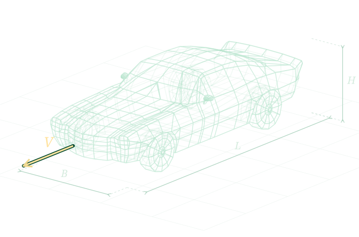

Дані зберігаються локально у браузері
Про проєкт
Засновник
- Ломакін В. О., к. т. н.
Автори
Учасники розроблення (contributors)
Заклад освіти: Житомирський агротехнічний фаховий коледж
Список доповнюється.
Допомога ШІ: підготовка текстів, переклад, допомога з програмуванням і перевірки (моделі родини GPT-6).
© 2026 Автори проєкту.
Режим перегляду. Увійдіть, щоб змінювати дані та створювати PDF.
УвійтиПроєктний розрахунок автомобіля
Інтерактивні методичні рекомендації поєднують класичну методику тягового розрахунку з явними одиницями, перевіркою введення, сучасною класифікацією транспортних засобів і відтворюваними звітами.
v0.4.67 · © 2026 Автори проєкту

L — довжина · B — ширина · H — висота · V — швидкість
1
Вступ
Ця інтерактивна розрахункова методика призначена для попереднього визначення основних параметрів транспортного засобу: динамічних властивостей, енергоефективності та навантажень. Вона також допомагає прийняти початкові параметри й схеми головних агрегатів. Усі запропоновані значення залишаються редагованими та мають бути уточнені за паспортними даними вибраних компонентів.
Фізичні величини й одиниці
Маса — кг, швидкість — км/год і м/с, ухил — %, м/м або градуси.
Формули поруч із результатом
Залежності та перетворення одиниць показуються безпосередньо в розділі розрахунку.
Нумерація формул і полів
Усі формули (1.xx–23.xx) та поля вводу (I-xx) пронумеровано для однозначного посилання в обговоренні та перевірці.
Вихідні та референтні значення
Вихідні та референтні значення подаються окремо відповідно до прототипу або відомих діапазонів із можливістю зміни.
2
Вихідні дані для проєктування
Послідовно задайте тип, силову установку, прототип та умови проєктування.
Проєкти та порівняння
JSON зберігає вихідні дані, прийняті рішення та завантажений цикл. Після відкриття результати перераховуються.
Зафіксуйте варіант, потім змінюйте параметри або відкрийте інший проєкт. Базовий варіант зберігається до перезавантаження сторінки.
| Показник | Базовий | Поточний | Різниця | Умови порівняння |
|---|
Категорії M1–M3 та N1–N3 подані за статтею 4 Регламенту (ЄС) 2018/858 . Числові приклади взяті з набору прототипів ; кожен запис має власне джерело та рівень достовірності даних.
3
Аналіз вихідних даних та розробка компоновальної схеми автомобіля
Розрахунки виконуються послідовно з вихідних даних розділу 2.
3.1 Визначення власної маси автомобіля
Спочатку визначаємо корисне навантаження \(M_{\mathrm{кор}}\) за прийнятим у розділі 2.4 режимом:
- \(M_{\mathrm{кор}}\)
- корисне навантаження автомобіля, кг;
- \(M_{\mathrm{п}}\)
- маса водія та пасажирів, кг;
- \(M_{\mathrm{багаж}}\)
- маса багажу пасажирів, кг;
- \(M_{\mathrm{в}}\)
- маса вантажу, кг.
\[
M_{\mathrm{кор}}=
\begin{cases}
M_{\mathrm{п}}+M_{\mathrm{багаж}}, & \text{пасажирський режим};\\
M_{\mathrm{в}}, & \text{вантажний режим};\\
M_{\mathrm{п}}+M_{\mathrm{багаж}}+M_{\mathrm{в}}, & \text{комбінований режим}.
\end{cases}
\]
(3.1)
За замовчуванням дорівнює результату (3.1) і оновлюється разом із ним. Можна прийняти інше значення вручну; батарея до навантаження не входить. Для іншої поїздки тим самим автомобілем зафіксуйте тут проєктне навантаження вручну.
Коефіцієнт тари \(q\) визначаємо як:
\[\displaystyle q=\frac{M_0}{M_{\mathrm{кор}}}\]
(3.2)
- \(q\)
- коефіцієнт тари;
- \(M_0\)
- власна маса автомобіля, кг.
Батарея та маса автомобіля без неї
Коефіцієнт тари \(q\) враховує власну масу BEV разом із батареєю. Початкове навантаження \(M_{\mathrm{кор,ref}}\), кг, — це люди, багаж і вантаж із (3.1), прийняті для проєктування автомобіля; батарея до нього не входить. Позначення «ref» означає початкову конфігурацію цього самого автомобіля. Її власна маса \(M_{0,\mathrm{ref}}=qM_{\mathrm{кор,ref}}\) є масою \(M_0\) до заміни пакета.
Спочатку віднімаємо початкову батарею й отримуємо масу автомобіля без батареї \(M_b\). Параметри батареї задаємо один раз нижче. Для заміни батареї увімкніть «Замінити батарею»; після заміни додаємо його масу один раз за (3.3). Навантаження приймаємо в I-39 одразу після (3.1): воно слідує розрахунку до ручного редагування. Для іншої поїздки тим самим автомобілем зафіксуйте проєктне навантаження в I-39 або масу без батареї в I-44 вручну.
Доступна місткість батареї у вікні BMS 0–100%. Цю саму батарею використовуємо для маси, SOC і запасу ходу, доки не задано її заміну.
Тип батареї задає початкове припущення питомої енергії всього пакета; прийняте значення можна редагувати.
Значення для всього пакета, включно з корпусом та охолодженням, на тій самій доступній енергетичній основі, що й його місткість.
Початкова власна маса \(M_{0,\mathrm{ref}}\), маса початкового пакета \(M_{\mathrm{bat,ref}}\) та маса без батареї \(M_b\), усі в кг:
\[
\begin{aligned}
M_{0,\mathrm{ref}}&=qM_{\mathrm{кор,ref}},\\
M_{\mathrm{bat,ref}}&\approx\frac{1000E_{u,\mathrm{ref}}}{\rho_{u,\mathrm{ref}}},\\
M_b&=M_{0,\mathrm{ref}}-M_{\mathrm{bat,ref}}.
\end{aligned}
\]
(3.11)
Маса пакета є оцінкою, коли не задана виробником. Доступна місткість у кВт·год і питома енергія у Вт·год/кг потребують множника 1000; повну паспортну місткість та питому енергію окремої комірки сюди не підставляють.
Маса самого автомобіля без батареї, людей, багажу й вантажу. Можна ввести своє значення; це вимкне автоматичний розрахунок. Заміна встановленої батареї цю масу не змінює.
Властивості проєктної батареї BEV
Після визначення маси без батареї перевірте властивості встановленого пакета. За цими входами далі обчислюємо власну масу (3.3), повну масу (3.4) та допустиме навантаження (3.10). Фактичні пасажири, багаж і вантаж задані в §2.4; зміна батареї автоматично оновлює всі залежні результати.
Для нового BEV застосовуються редаговані навчальні припущення класу. Для M1 це 50 кВт·год доступної місткості та проєктна межа 2500 кг; SOC 90 → 10%, верхня межа 100%. Це не паспорт прототипу. Паспортна повна місткість залишається довідковою властивістю прототипу; для розрахунку використовуємо доступну місткість. Збережені й ручні значення мають перевагу.
Початковий M1 використовує повний профіль WLTC 3b. Інші класи починають із короткого навчального циклу 60 с до 20 км/год, щоб показати обчислення на сумісних початкових параметрах. Це демонстрація, а не типовий маршрут або сертифікаційна витрата. Для проєктного пробігу оберіть потрібний цикл чи завантажте свій маршрут у §8.2; заданий вручну профіль зберігається.
Маса без батареї \(M_b\) зберігається в полі (I-44). Для звичайного розрахунку достатньо місткості (I-41) та питомої енергії (I-43), заданих вище. Якщо встановлюєте інший пакет, увімкніть заміну й задайте його властивості; маса автомобіля без батареї при цьому зберігається. Прийняття батареї з §8.1 також вмикає заміну.
Доступна місткість у вікні BMS 0–100%; використовується для маси пакета, SOC і запасу ходу.
Необов’язкова паспортна властивість. Не використовується замість доступної місткості.
160 Вт·год/кг — попереднє припущення. Вкажіть значення для всього пакета, включно з корпусом і охолодженням, на доступній енергетичній основі.
Обмеження конструкції або паспорта; фактичне навантаження береться один раз із §2.4.
Показаний BMS рівень у межах доступної місткості.
Межа завершення поїздки; нижче не витрачаємо енергію.
При досягненні межі рекуперацію обмежено; надлишок іде у фрикційні гальма.
Ціль підбору батареї за незмінних навантаження, приводу, SOC і вибраного профілю.
Перевірки енергії та електричних меж
Режим електричних перевірок (I-53) визначає врахування напруги, струму та внутрішніх втрат. Власна маса BEV в обох режимах визначається за тією самою базою \(M_b\) та новим пакетом (3.3).
Електричні параметри пакета
Параметри нижче — редаговані припущення для моделі зі сталою напругою і внутрішнім опором. Вони активні в режимі з перевіркою напруги та струму, вибраному в полі (I-53): межі струму й напруги визначають, чи забезпечує батарея потрібну потужність та чи приймає рекуперацію. Потужність на клемах \(P=(U_b-R_b I)I\); зміна енергії батареї визначається \(U_b I\), а тепло — \(R_b I^2\). Архітектуру 400 або 800 В задають напругою пакета; вона сама по собі не визначає хімію чи питому енергію батареї. Напругу, опір та струмові межі узгоджують між собою за даними прийнятого пакета.
Попереднє припущення: стала напруга всього пакета.
Попереднє припущення для всього пакета; нуль задає ідеальну батарею.
Попереднє припущення; дефіцит потужності профілю забороняє результат запасу ходу.
Попереднє припущення. Нуль вимикає приймання рекуперативного струму.
Нижня межа з урахуванням падіння напруги на опорі.
Верхня межа при заряджанні з урахуванням внутрішнього опору.
\[\displaystyle M_0=\begin{cases}qM_{\mathrm{кор}},&\text{ДВЗ / гібрид};\\ M_b+1000E_u/\rho_u,&\text{BEV: }E_u\text{ у кВт·год, }\rho_u\text{ у Вт·год/кг}.\end{cases}\]
(3.3)
3.2 Повна маса автомобіля
\[\displaystyle M_a=M_0+M_{\mathrm{кор}}\]
(3.4)
\(M_a\) — повна маса автомобіля, кг.
3.3 Маса батареї та допустиме навантаження BEV
Маса батареї та допустиме навантаження BEV
Доступна питома енергія \(\rho_u\) задана для всього пакета у Вт·год/кг; для \(E_u\) у кВт·год застосовується множник 1000. Маса пакета та залишок допустимого навантаження обчислюються за тими самими введеними властивостями:
\[M_{bat}=1000E_u/\rho_u\]
(3.9)
\[Q_{lim}=M_{lim}-M_b-1000E_u/\rho_u\]
(3.10)
Від’ємне \(Q_{lim}\) або фактичне навантаження понад цю межу означає перевищення допустимої повної маси. Пасажирів і вантаж не додають вдруге.
Межа маси встановленого пакета \(M_{\mathrm{bat,max}}\), кг, за фактичного навантаження з (3.1):
\[M_{\mathrm{bat,max}}=\max(0,M_{lim}-M_b-M_{\mathrm{кор}})\]
(3.12)
Менший пакет залишає більше маси для вантажу, але має забезпечувати заданий пробіг. Остаточний вибір у §8.1 одночасно перевіряє цю межу, пробіг та можливість пройти вибраний профіль руху.
3.4 Колісна формула та розподіл навантаження по осях
Маючи \(M_a\), перевіряємо допустиму повну масу для вибраної у розділі 2.6 категорії дороги. Кількість ведучих осей приймаємо за умовами прохідності вибраної поверхні.
| Вихідна повна маса | — |
|---|---|
| Категорія дороги | — |
| Граничні повні маси для 2 / 3 / 4 осей | — |
| Прийнята колісна формула | — |
| Ведуча вісь | — |
Скільки осей ведучі, каже сама формула: 6×4 — це дві ведучі осі з трьох. Котрі саме — вона не каже, а для зчіпної ваги \(G_{\text{зч}}\) це і є головне: у неї входять лише ті осі, які штовхають. Для 4×2 вибір між переднім і заднім приводом істотно змінює \(G_{\text{зч}}\) — на стільки, на скільки різняться частки осей. Початкове проєктне припущення для прийнятих поздовжніх схем класу: M1, M2, M3, N1 і N2 — задня вісь; N3 — задня група осей. Це редагований вибір компонування, а не вимога категорії. За повного приводу ведучі всі осі.
—
Приймають лише частку передньої осі \(k_1\) — за рекомендованими залежностями (таблиця 3.1) і за потреби уточнюють. Частки решти осей із неї випливають: залишок \(1-k_1\) ділиться між ними порівну, що для балансирного візка й означає \(G_2=G_3\).
Тому сума часток дорівнює одиниці за побудовою і окремої перевірки не потребує; сам розподіл записано рівнянням (3.5).
Зміна колісної формули повертає поле до рекомендованого значення.
- \(k_1\)
- прийнята частка повної сили тяжіння на передній осі;
- \(n\)
- кількість осей;
- \(k_i\)
- частка повної сили тяжіння на \(i\)-й осі;
- \(m_i\)
- попереднє навантаження на \(i\)-ту вісь у масовому вираженні, т.
| Схема автомобіля | Рекомендована залежність |
|---|
Для балансирної підвіски середнього та заднього мостів приймають \(G_2=G_3\). Висоту центра мас (\(h_g\)) орієнтовно приймають 0,7–0,8 м для легкових автомобілів і 0,9–1,1 м для вантажних. .
Розподіл часток — прийнято
| Вісь | Шин | Попередня частка \(k_i\) | \(m_i=k_iM_a\), т | Межа осі за ПДР 22.5, т | Попередня оцінка |
|---|
Для зближених осей додатково потрібна відстань \(B_1\).
Межу навантаження на вісь (11,5 т на дорогах державного значення, 7 т — місцевого) застосовуємо лише там, де вона визначальна: до N1–N3 та M3. Для M1 і M2 навантаження на вісь на порядок менше за цю межу, тому порівняння з нею нічого не перевіряє; визначальна тут несуча здатність шини, і саме тому колонки межі та оцінки для цих категорій не виводяться.
Початкове співвідношення \(1/3:2/3\) для двовісного вантажного автомобіля входить до діапазонів методики : на задню вісь двовісного автомобіля припадає \(0{,}65\ldots0{,}72G_a\) залежно від розташування кабіни та шин, на задню групу тривісного — \(0{,}68\ldots0{,}76G_a\). Для легкового автомобіля початкові 45/55 узгоджуються з \(G_2=(0{,}50\ldots0{,}56)G_a\) для задньоприводної схеми.
Габаритну схему буде показано після того, як за повною масою \(M_a\) буде визначено кількість осей і прийнято колісну формулу.
Для вантажних автомобілів N2–N3 мінімальна кількість осей попередньо перевіряється за межами повної маси для доріг державного або місцевого значення . Для автобусів M3 рекомендація є компонувальною оцінкою, а не перевіркою законодавчої межі. Кількість ведучих осей та одинарних шин — проєктне рішення за умовами прохідності, а не вимога .
- \(G_a\)
- сила тяжіння від повної маси автомобіля, кН;
- \(G_i\)
- вертикальне навантаження на \(i\)-ту вісь, кН;
- \(g\)
- прискорення вільного падіння, \(9{,}81\ \mathrm{м/с^2}\).
Розрахунок сил навантаження
\[\displaystyle G_a=M_ag,\qquad k_i=\frac{1-k_1}{n-1},\qquad G_i=k_iG_a\]
(3.5)
- \(H\)
- габаритна висота автомобіля, м;
- \(B\)
- колісна база, м;
- \(B_1\)
- відстань між задніми осями тривісного автомобіля, м;
- \(L\)
- габаритна довжина автомобіля, м;
- \(F\)
- колія передніх коліс, м;
- \(R\)
- колія задніх коліс, м;
- \(W\)
- габаритна ширина автомобіля, м.
- \(G_a\)
- повна сила тяжіння автомобіля, кН;
- \(G_i\)
- реакція опори на осі \(i\), кН.
Габарити прототипу \(L\), \(H\), \(W\) наведено за наявним джерелом; невідомі значення залишаються символами. Колії \(F\) і \(R\) показано схематично. Вектори \(G_a\) та \(G_i\) показують розраховану силу тяжіння й розподіл реакцій між осями. Кліренс, звиси та кути звису не визначено, тому їхні розміри на схемі відсутні.
Початкові частки навантаження є припущенням. Після введення колісної бази, положення центра мас і відстані між зближеними осями частки уточнюють із рівнянь рівноваги.
- \(a\)
- відстань від передньої осі до центра мас, м;
- \(b\)
- відстань від центра мас до першої задньої осі, м;
- \(B\)
- колісна база; для тривісної схеми — відстань від передньої до першої задньої осі, м;
- \(B_1\)
- відстань між середньою та задньою осями, м.
Для двовісного автомобіля:
\[\displaystyle a=\frac{G_2B}{G_a},\qquad b=B-a\]
(3.6)
Для тривісного автомобіля:
\[\displaystyle a=\frac{G_2B+G_3(B+B_1)}{G_a},\qquad b=B-a\]
(3.7)
Сумарний опір дороги
Опір коченню й опір підйому діють разом, тому їх зводять в один коефіцієнт, яким користуються розділи 4.2 і 4.3.
- \(f\)
- коефіцієнт опору коченню при \(V_{\max}\) за (2.1);
- \(\alpha\)
- кут поздовжнього ухилу, прийнятий у полі (I-38) розділу 2.6; до поправки кочення (2.1) ухил не входить;
- \(\psi\)
- коефіцієнт сумарного опору дороги.
\[\displaystyle \psi=f\cos\alpha+\sin\alpha\]
(3.8)
Складник опору коченню береться з (2.1) ; складник підйому — з прийнятого ухилу, тому окремого джерела не потребує.
—
4
Тяговий розрахунок автомобіля
4.1.1 Навантаження на шину та вибір шин
Навантаження на одну шину визначають для кожної осі, а шини вибирають за найбільшим із них.
- \(G_{\mathrm{ш}}\)
- навантаження на одну шину, кН;
- \(G_i\)
- навантаження на \(i\)-ту вісь, кН;
- \(n\)
- кількість коліс на осі: 2 — односкатні, 4 — двоскатні.
Навантаження на одну шину розраховуємо за формулою :
\[\displaystyle G_{\mathrm{ш}}=\frac{G_i}{n}\]
(4.1)
| Вісь | Шин | \(G_i\), кН | \(G_{\mathrm{ш}}\), кН |
|---|
Вимога до шини
Статичний радіус шини за позначенням
Введіть позначення шини. Відношення \(H/B\) читається з нього, а діапазон \(\lambda_{\mathrm{ст}}\) залежить від категорії автомобіля та конструкції шини. Порожнє поле коефіцієнта використовує середину вказаного діапазону; власне значення зберігається як прийняття автора.
- \(d\)
- посадочний діаметр обода, мм;
- \(B\)
- ширина профілю шини, мм;
- \(\Delta=H/B\)
- відношення висоти профілю до його ширини;
- \(\lambda_{\mathrm{ст}}\)
- коефіцієнт, що враховує зминання шини під навантаженням.
—
—
—
Статичний радіус шини розраховуємо за формулою Волкова та Вільського, с. 25, рівняння (1.8) :
\[\displaystyle r_{\mathrm{ст}}=0{,}5d+\Delta\lambda_{\mathrm{ст}}B\]
(4.2)
Індекс несучої здатності та категорія швидкості .
4.1.3 Фактор опору повітря
Фактор опору повітря визначають за коефіцієнтом аеродинамічного опору та площею лобової проєкції автомобіля.
- \(C_d\)
- коефіцієнт аеродинамічного опору;
- \(A\)
- площа лобової проєкції автомобіля, м²;
- \(\rho\)
- густина повітря, кг/м³;
- \(K\)
- коефіцієнт обтічності, Н·с²/м⁴;
- \(W\)
- фактор опору повітря, Н·с²/м².
1,225 кг/м³ — стандартна атмосфера на рівні моря за 15 °C. Для інших умов значення задає користувач.
Фактор опору повітря розраховуємо за формулою :
\[\displaystyle K=\tfrac{1}{2}\rho C_d,\qquad W=KA=\tfrac{1}{2}\rho C_d A\]
(4.4)
Тут \(K\) вимірюється в Н·с²/м⁴, \(W\) — у Н·с²/м², \(\rho\) — у кг/м³, \(A\) — у м²; \(C_d\) — безрозмірний.
—
Додатково: виміряний опір з вибігу автомобіля
Основний розрахунок використовує прийняті f₀ та W. Коефіцієнти вибігу потрібні лише за наявності вимірювань для конкретної маси автомобіля. F₀ — стала сила, Н; F₁ — коефіцієнт лінійного члена, Н·с/м; F₂ — коефіцієнт квадратичного члена, Н·с²/м². Сила: \(F(V)=F_0+F_1V+F_2V^2\). Це не безрозмірний f₀ або коефіцієнт зчеплення. Вибіг поєднує опір шин, механічні втрати та аеродинаміку; розділити їх без додаткових даних не можна. Підказки з f₀ і W не є вимірюваннями. Підбір батареї/навантаження за змінною масою тут вимкнений: коефіцієнти виміряні для однієї маси, а потрібного розділення складових немає.
Стала складова опору з вибігу; діє лише в режимі «З вибігу автомобіля».
Швидкісна складова виміряного опору, Н·с/м. Це не коефіцієнт кочення f₀; нуль — лише початкове припущення.
Квадратичний коефіцієнт виміряного опору. Лише за окремого підтвердження його можна ототожнити з аеродинамічним W.
4.1.2 Попередній ККД трансмісії
До вибору коробки передач і редуктора невідомо, скільки саме зубчастих пар, підшипників і шарнірів передають потужність. Тому на етапі (4.5) ККД не обчислюємо за ще не вибраними деталями, а попередньо приймаємо за грубим діапазоном джерела. Після вибору агрегатів це число треба уточнити.
Для механічної ступінчастої трансмісії курсова методика подає орієнтовні діапазони \(0{,}78\ldots0{,}94\) залежно від типу автомобіля, колісної формули й головної передачі . Застосунок підставляє середину відповідного рядка як редаговане початкове значення. Для BEV приймаємо \(0{,}95\): Zheng описує редуктор і трансмісію як складники з ККД у середньому та верхньому діапазоні 90 %, але це не ККД батареї, інвертора чи електромашини .
Механічний ККД трансмісії розраховуємо за формулою :
\[\displaystyle \eta_{\mathrm{м,0}}=
\frac{\eta_{\min}+\eta_{\max}}{2}\]
(4.3)
| Параметр електричного привода | Прийняте / довідкове значення |
|---|
—
4.2 Потужність для руху з максимальною швидкістю
- \(N_v\)
- необхідна потужність силової установки, кВт;
- \(\psi_v\)
- коефіцієнт сумарного опору дороги при \(V_{\max}\);
- \(G_a\)
- повна сила тяжіння автомобіля, Н;
- \(W\)
- фактор опору повітря, Н·с²/м²;
- \(\eta_{\mathrm{м}}\)
- ККД трансмісії.
Необхідну потужність для руху з максимальною швидкістю розраховуємо за формулою :
\[\displaystyle N_v=\frac{\psi_VG_aV_{\max}+WV_{\max}^{3}}{1000\eta_{\mathrm{м}}}\]
(4.5)
—
4.3 Редукція електричного привода (лише BEV / гібрид)
—
Клас автомобіля сам по собі не визначає редукцію: вона залежить від максимальної частоти електромашини, шини та цільової швидкості. Тому для всіх класів початкове \(i_g=8{,}27\) за прикладом Tesla Roadster використовується для попереднього визначення частот і потужності електромашини. Після цього автоматичний підбір зменшує редукцію так, щоб повна пікова сила тяги була нижчою за межу зчеплення із запасом 1%. Частоти й потужність електромашини при цьому не підлаштовуються під зменшену редукцію. Для паспортного редуктора виберіть спосіб «Повні редукції» або «Ряд передач».
Лише для способу «ряд × головна». Введіть одне або два спадні числа через крапку з комою. Повні редукції осей у цьому способі не використовуються.
Задається окремо для способу «ряд × головна»; розрахунок головної передачі наведено у §12. Паспортне сумарне число мотор–колесо вводьте способом «повні редукції».
Розрахунок використовує одну вибрану передачу протягом циклу. Автоматичне перемикання та його втрати не моделюються. Одношвидкісна друга вісь зберігає свою редукцію. У способі «повні редукції» нумерація відповідає порядку заданих чисел.
Залиште порожнім, якщо передня вісь не ведуча. Для конкретного привода введіть паспортне число.
Автоматичний підбір зменшує початкове 8,27 за межею зчеплення. Для введення паспортного числа виберіть спосіб «Повні редукції».
Заповніть, якщо привод ДВОШВИДКІСНИЙ — тобто має дві передачі, які вмикають по черзі. Це не другий ступінь редукції: ступені перемножуються, а передачі вибирають.
За прийнятим передаточним числом потрібну максимальну частоту обертання електродвигуна визначаємо за формулою, одержаною з рівняння (8.12) джерела :
\[\displaystyle n_{\mathrm{m,max}}=\frac{30V_{\max}i_g}{\pi r_{\mathrm{д}}}\]
(4.6)
—
—
4.4 Зовнішня характеристика джерела тяги
Тягу створює не «двигун узагалі», а конкретна машина, і характеристика в кожної своя за самою природою. Поршневий двигун має швидкісну зовнішню характеристику \(P(\omega)\); тяговий електродвигун — дві ділянки, сталого моменту й сталої потужності; у послідовного гібрида на колесах стоїть лише електродвигун, а ДВЗ обертає генератор, і його крива тоді взагалі не тягова. Тому розділ будує стільки кривих, скільки в автомобіля джерел тяги, і для кожної каже, чи передає вона момент на колеса.
- \(P_{\max}\)
- максимальна потужність, кВт;
- \(\omega_{P\max}\)
- частота обертання при максимальній потужності, с\(^{-1}\);
- \(\omega_N=\omega_{P\max}\)
- прийнята номінальна кутова швидкість;
- \(\omega_x\)
- нижня робоча частота попередньої характеристики;
- \(\omega_1,\omega_2\)
- межі ділянки сталого моменту в обраній моделі;
- \(T\)
- крутний момент, Н·м.
Спосіб задання кривої
Джерел тяги буває два, і задають їх окремо: у гібрида крива ДВЗ може бути знята на стенді, а крива електродвигуна — паспортна, або навпаки. Один спільний перемикач цього не виразив би.
Завантаження CSV автоматично вибирає виміряну криву. Полицю моменту задають за паспортними межами конкретного двигуна; без них початкова апроксимація залишається попередньою оцінкою.
Порядок переваги для кожної машини той самий. Апроксимація потрібна лише тоді, коли кривої немає: зняті на стенді точки — це пряме свідчення, і жодна емпірична залежність його не поліпшить.
Початковий двигун автоматично приймається за даними розділів 1–2 та оновлюється разом із класом, паливом і вимогою до швидкості. Його номінал є проєктним припущенням; паспортну або виміряну характеристику задають окремо.
Перший стовпець — частота обертання, об/хв. Другий — момент або потужність; що саме, видно із заголовка («n; M» чи «n; P»). Роздільник — крапка з комою, кома або табуляція.
Попередня проєктна апроксимація
Коли конкретної кривої немає, застосунок будує гладку попередню огинаючу: момент зростає від нижньої робочої частоти, утримується на прийнятій ділянці та зменшується з виходом на номінальну потужність. Форма, відносні межі та низькочастотний момент є припущеннями цього проєкту. Вони не є паспортом двигуна, виміряними коефіцієнтами або наслідком класифікації Euro 5/6.
об/хв
\[\displaystyle P=\frac{T\omega}{1000},\qquad
T=\begin{cases}
T_m[c+(1-c)(3x^2-2x^3)],&\omega_x\le\omega\lt\omega_1,\\
T_m,&\omega_1\le\omega\le\omega_2,\\
1000[P_N-(P_N-P_2)(1-y)^p]/\omega,&\omega_2\lt\omega\le\omega_N.
\end{cases}\]
(4.7)
Тут \(P_N=P_{\max}\), \(T_m=k_T1000P_N/\omega_N\), \(\omega_1=a\omega_N\), \(\omega_2=b\omega_N\), \(P_2=T_m\omega_2/1000\), \(x=(\omega-\omega_x)/(\omega_1-\omega_x)\), \(y=(\omega-\omega_2)/(\omega_N-\omega_2)\), \(p=k_T(1-b)/(1-k_Tb)\). Вибір \(p\) узгоджує нахил моменту на стику ділянок; у кожній точці зберігається \(P=T\omega/1000\).
| Початкове припущення про двигун | \(k_T\) | \(a\) | \(b\) | \(c\) |
|---|---|---|---|---|
| Дизель | 1,40 | 0,43 | 0,62 | 0,45 |
| Бензиновий із турбонаддувом | 1,50 | 0,32 | 0,58 | 0,40 |
| Іскровий без наддуву, зокрема прийнята модель LPG | 1,15 | 0,65 | 0,72 | 0,40 |
Це відкриті параметри розрахункової моделі, а не універсальні властивості двигунів. Нижню й номінальну частоти приймають за профілем класу, наведеним нижче біля (4.22); номінальну частоту можна змінити в полі (I-81). Для іншого палива потрібні явні паспортні/проєктні точки або виміряна крива.
Історична поліноміальна апроксимація Шпіци \(P=P_{\max}[A\xi+B\xi^2-(A+B-1)\xi^3]\) збережена в навчальних прикладах методичного посібника. Її коефіцієнти не використовуються як типова сучасна огинаюча застосунку.
Полиця максимального моменту
Кубічна залежність дає для моменту параболу — з одним максимумом. Наддувний двигун тримає \(T_{\max}\) у широкому діапазоні частот, і жоден набір коефіцієнтів цього не відтворить: річ у формі функції, а не в числах .
Н·м
об/хв
об/хв
об/хв
У режимі попередньої апроксимації ці поля не заповнюються автоматично. Розрахований момент може бути показаний як підказка, але він не стає паспортним чи ручним введенням. Для явно заданої полиці потрібно ввести момент і її межі; самих номінальної потужності й частоти недостатньо. Вибрана виміряна або явно задана поличкова крива зберігається після зміни дорожніх умов. Недостатню потужність показує перевірка максимальної швидкості; автоматичний перерахунок не змінює декларацію двигуна.
Межі полиці моменту задають у полях (I-83) та (I-84). Окрему паспортну межу полиці потужності після частоти \(P_{\max}\) задають у полі (I-85); вона не продовжує полицю моменту.
Крива складається з відрізків між паспортними точками. Це прозора інтерполяція цього проєкту, а не метод із джерела: понад \(\omega_{P\max}\) вона продовжується лише тоді, коли паспорт подає діапазон максимальної потужності.
Електродвигун
кВт
Початково — попередня потреба для сталої максимальної швидкості. Каталог приймає опубліковану номінальну потужність; її режим роботи перевіряють за паспортом. Невідомий номінал не домислюється.
Навчальне прийняття P_peak = 1,5 P_cont на 10 с. Це не тепловий розрахунок або характеристика виробника; ручна чи каталожна потужність має перевагу.
об/хв
об/хв
Ehsani у прикладі §8.3.1 приймає x = 4; діапазону джерело не подає, тому це прийняте значення проєкту .
Джерело тяги та його зв'язок із колесами
Позначка силової установки цього не доводить: «REx» — торгова назва, а не опис механіки. Поки зв'язок не задано, крива ДВЗ будується, але чи є вона тяговою — не стверджується.
Для нового HEV/PHEV застосунок початково приймає механічний зв'язок ДВЗ і моментне з'єднання джерел, щоб розрахунок мав визначений шлях. Це редаговане проєктне прийняття: для послідовного гібрида слід вибрати «лише генератор», а для power-split — відповідну планетарну схему.
У ДВЗ і електродвигуна основа паспортних значень різна за своєю природою, тому її задають окремо. У двигуна внутрішнього згоряння тривала й короткочасна потужності майже збігаються: обмежує їх та сама зовнішня характеристика. Електрична машина інша — короткочасно вона віддає в рази більше, ніж витримує тривало, і межу ставить нагрів. Гібрид цілком природно має тривалу потужність ДВЗ і пікову потужність електродвигуна, і одне спільне поле змушувало б назвати обидві однаково.
Для ДВЗ різниця між тривалою й короткочасною потужністю невелика: обидві обмежує зовнішня характеристика.
—
4.4.1. Карти ефективності двигуна й електромашини
Питому витрату палива та потужність допоміжних споживачів задають один раз у §7.1.
CSV rpm,torque_nm,efficiency: ККД 0…1, повна сітка ≥ 2 × 2. Або JSON powertrain-component-package/1 з ICE: збережено джерело, SHA-256, маску й огинаючу; інтерполюється витрата палива з H_u та густиною пакета. Характеристику двигуна й носій енергії узгоджує автор. Екстраполяція заборонена.
Для попереднього розрахунку ДВЗ використовуємо баланс індикаторної потужності та втрат тертя . Карта задає ККД залежно від частоти обертання та навантаження. Початкові параметри є припущеннями навчального проєкту; для конкретного двигуна їх уточнюють за вимірюваннями.
Модель конкретного двигуна калібрують за його картою . Сталі індикаторний ККД і момент тертя є спрощенням: для дослідженого DI-двигуна оцінка тертя методом Віланса виявилася неточною . Імпортована сітка замінює цю оцінку в розрахунку їздового циклу; характеристика усталених витрат §7 зберігає свою окремо зазначену методику.
Модель ефективності ДВЗ
Потужність на валу — це індикаторна потужність мінус потужність тертя (Ehsani, рівн. 3.6) . Поділивши обидві частини на потужність палива, дістають готову карту, у якій кожен доданок щось означає.
Момент тертя калібруємо за номінальною точкою. Індикаторний ККД \(\eta_{\text{і}}\) приймаємо як параметр проєкту. Механічний ККД у номінальній точці порівнюємо з діапазоном 75…90 % .
- \(\eta_{\text{і}}\)
- індикаторний ККД — частка теплоти палива, що стала роботою в циліндрі;
- \(M_{\text{тр}}\)
- момент тертя двигуна, Н·м;
- \(\eta_{\text{е}}\)
- ефективність двигуна в точці, частка;
- \(k_{\text{м}},\ k_{\text{ст}}\)
- коефіцієнти обмоткових втрат і втрат у сталі;
- \(\eta_{\text{ем}}\)
- ефективність електромашини в точці, частка.
\[\eta_{\text{е}}=\frac{\eta_{\text{і}}P_{\text{е}}}
{P_{\text{е}}+M_{\text{тр}}\omega},\qquad
M_{\text{тр}}=\frac{P_N}{\omega_N}\left(\frac{\eta_{\text{і}}}{\eta_N}-1\right)\]
(4.20)
Порівняння моделей
У тих самих точках обчислюємо \(g_e=g_N K_{\omega}K_B\) . Розбіжність характеризує чутливість результату до вибору моделі; збіг двох наближень не замінює перевірки за стендовою картою.
CSV: rpm,torque_nm,efficiency, додатні оберти й момент, 0 < ККД ≤ 1. JSON: повний ICE-пакет motor з профілем, loss_w, маскою, огинаючою та джерелом. У циклі діють тривалі межі пакета; рекуперація потребує від’ємних моментів у джерелі.
Лише для JSON з межею motor-only. Для motor+inverter додаткові втрати інвертора вже включено до карти; для CSV та розрахункової моделі це поле не застосовується.
Втрати електромашини Zheng розкладає на дві головні складові: обмоткові ростуть як квадрат струму, а струм пропорційний моменту; втрати в сталі ростуть із частотою перемагнічування, тобто з обертами.
\[\eta_{\text{ем}}=\frac{M\omega}{M\omega+k_{\text{м}}M^2
+k_{\text{ст}}\omega^{1{,}5}},\qquad
k_{\text{м}}M_*^2=k_{\text{ст}}\omega_*^{1{,}5}\]
(4.21)
Двох коефіцієнтів з однієї точки не дістати, але друге рівняння дає сама умова максимуму: прирівнявши до нуля похідну ККД за моментом, дістають \(k_{\text{м}}M^2=k_{\text{ст}}\omega^{1{,}5}\) — у точці найбільшого ККД обмоткові втрати дорівнюють втратам у сталі. Це не прийнято на віру, а виведено з самої форми втрат.
- \(M\), \(T\)
- крутний момент електромашини, Н·м; карта та зовнішня характеристика використовують позначення \(T\);
- \(n\), \(\omega\)
- частота обертання, об/хв, та кутова швидкість, рад/с;
- \(\eta\)
- ККД у клітинці карти, %; у рівнянні (4.21) ККД задано часткою.
Попередня потужність і прийняття реальних машин
Результат (4.5) — потрібна потужність силової установки за максимальної швидкості. Формула (4.22) перетворює її на попередню встановлену потужність і для гібрида явно розділяє між ДВЗ та електромашиною. Частка \(x_{\mathrm{е}}\) є редагованим рішенням проєкту; початкові 0,5 не є універсальним законом керування гібридом.
- \(P_{\Sigma,\mathrm{розр}}\)
- сумарна попередня встановлена потужність, кВт;
- \(P_{\mathrm{ДВЗ,розр}}\)
- розрахункова частка ДВЗ, кВт;
- \(P_{\mathrm{е,розр}}\)
- розрахункова частка електромашини, кВт;
- \(k_N\)
- початковий запас потужності проєкту: 1,15 для установки з ДВЗ, 1,0 для BEV;
- \(x_{\mathrm{е}}\)
- частка електромашини у попередній встановленій потужності.
\[\displaystyle P_{\Sigma,\mathrm{розр}}=k_NN_v,\qquad
P_{\mathrm{ДВЗ,розр}}=(1-x_{\mathrm{е}})P_{\Sigma,\mathrm{розр}},\qquad
P_{\mathrm{е,розр}}=x_{\mathrm{е}}P_{\Sigma,\mathrm{розр}}\]
(4.22)
Для традиційного автомобіля \(x_{\mathrm{е}}=0\); для BEV \(x_{\mathrm{е}}=1\) і \(k_N=1\). Запас 15 % для установки з ДВЗ є проєктним початковим припущенням; прийняті потужність і номінальну частоту можна змінити. Для різних класів початково використовують такі оберти:
| Клас | Дизель, \(n_N\), об/хв | Іскровий, \(n_N\), об/хв | Нижня робоча частота \(n_x\), об/хв |
|---|---|---|---|
| M1 | 3800 | 5500 | 800 |
| M2 | 3500 | 5000 | 780 |
| M3 | 2200 | 4000 | 650 |
| N1 | 3500 | 5000 | 780 |
| N2 | 2400 | 4200 | 700 |
| N3 | 2100 | 4000 | 600 |
Це узгоджені стартові профілі для розрахунку, а не нормативні межі класів або дані виробника. Попередня огинаюча діє від \(n_x\) до \(n_N\); паспортна чи виміряна крива визначає власну робочу смугу. Історичні діапазони курсової методики та серійні приклади наведено в методичному посібнику окремо. Euro 5/6 позначає класифікацію викидів і не задає форму силової характеристики.
Поля нижче спочатку повторюють розраховані значення — «Приймаємо для ДВЗ» і «Приймаємо для електромашини». Після вибору реального агрегату вони замінюються паспортними даними й лишаються редагованими.
Побудована характеристика на вихідному валу
Карти ефективності вище задають перетворення енергії та потрібні для витрати палива або електроенергії. Вони не змінюють паспортну зовнішню характеристику на вихідному валу; її будуємо після прийняття моделі втрат, щоб усі дані джерела тяги були зібрані до переходу до коліс.
- \(P_{S1}\)
- тривала потужність електродвигуна на валу, кВт; режим S1 відповідає тривалій роботі за заданих умов охолодження;
- \(P_{peak}\)
- короткочасна пікова потужність на валу, кВт; допустима тривалість задається окремо;
- \(T_{S1}\), \(T_{peak}\)
- відповідні тривалий та піковий моменти на валу, Н·м;
- \(n\), \(\omega\)
- частота обертання, об/хв, та кутова швидкість, рад/с.
На рисунку порівнюються дві характеристики однієї електромашини. До тягового розрахунку передається характеристика обраного режиму; тривалу та пікову потужності не додають. Піковий режим потребує перевірки тривалості й теплових умов, а не лише більшої потужності.
Для електромашини потужність на валу й граничні значення визначаємо за прийнятою характеристикою :
\[P_{\mathrm{м}}(\omega)=M_{\mathrm{м}}(\omega)\omega/1000\]
(4.23)
\[M_{\mathrm{м,max}}=\max_{\omega} M_{\mathrm{м}}(\omega)\]
(4.24)
\[\omega_{\mathrm{м,max}}=\pi n_{\mathrm{м,max}}/30\]
(4.25)
Для гібрида криві ДВЗ та електромашини на цьому рисунку лишаються окремими: їхні частоти належать різним валам. Фізично коректну суму застосунок будує в §4.5 на колесах за швидкістю автомобіля, після врахування редукцій, ККД і схеми з'єднання.
4.5 Сила тяги на колесах
Характеристика описує машину, а рухає автомобіль сила на колесах. Між ними стоїть привод: передаточне число, ККД і те, яку частку джерела віддано цій осі. Тому шлях задають окремо від джерела — один двигун може вести дві осі, а на одній осі можуть працювати дві різні машини.
- \(T\)
- момент джерела, Н·м;
- \(i\)
- передаточне число шляху;
- \(\eta\)
- ККД шляху;
- \(u\)
- частка джерела, віддана цьому шляху;
- \(r_{\mathrm{д}}\)
- динамічний радіус колеса осі, м;
- \(F_{\mathrm{т}}\)
- сила тяги на колесах, Н.
об/хв
Для схеми power-split приймаємо ДВЗ на водилі, генератор на сонячній шестерні, а тяговий мотор і вихід — на коронній. Частоти перевіряємо за рівнянням Вілліса :
\[\displaystyle z_s\omega_s+z_r\omega_r=(z_s+z_r)\omega_c\]
(4.26)
Тут \(z_s\), \(z_r\) — прийняті числа зубів сонячної та коронної шестерень; \(\omega_s\), \(\omega_r\), \(\omega_c\) — їхні кутові частоти та частота водила, с⁻¹. Числа зубів і допустимі оберти генератора задають для вибраного планетарного агрегату; до звичайного механічного привода (4.26) не застосовують.
\[\displaystyle F_{\mathrm{т}}=\frac{T\,i\,\eta\,u}{r_{\mathrm{д}}},\qquad
V=\frac{\omega r_{\mathrm{д}}}{i}\]
(4.8)
Спільна тяга ДВЗ та електродвигуна — для гібрида
У гібриді автомобіль можуть приводити ДВЗ і електродвигун. Їхні сили додають на колесах при одній швидкості автомобіля, з урахуванням передаточних чисел, втрат і того, яка частка потужності кожної машини використовується . Повне навантаження обох машин — верхня межа можливостей, а не модель роботи керування. Для автомобіля лише з ДВЗ цей розподіл не потрібний.
\[\displaystyle F_{\mathrm{adopted}}(V)=\sum_s u_s(V)\,F_{s,\max}(V)\]
(4.9)
Передаточне число трансмісії на вищій передачі має верхню кінематичну межу. При заданій швидкості частота двигуна пропорційна повній редукції: \(\omega=Vu_{\Sigma}/r_{\mathrm{д}}\). Якщо редукція більша за цю межу, двигун перевищить \(\omega_{\max}\). У позначенні \(u_{\mathrm{тр,min}}\) індекс «min» стосується найменшого числа в ряду передач, тобто вищої передачі, а не нижньої допустимої межі:
\[u_{\mathrm{тр,min}}=\dfrac{\omega_{\max}\,r_{\mathrm{к}}}{V_{\max}}\]
(4.10)
За радіус кочення \(r_{\mathrm{к}}\) тут беруть прийнятий динамічний радіус: \(r_{\mathrm{к}}\approx r_{\mathrm{д}}\). Для оцінки різниці в проєкті прийнято діапазон вільного радіуса кочення \(1{,}03\ldots1{,}06\,r_{\mathrm{ст}}\). Це навчальне припущення, яке уточнюють за даними конкретної шини. За такого припущення заміна занижує \(u_{\mathrm{тр,min}}\) на кілька відсотків і дає запас за максимальною швидкістю.
Найбільший момент зовнішньої характеристики стає окремим значенням документа: на нього спираються і перша передача, і розрахунок зчеплення в розділі 9, тому воно має бути тим, на що можна послатися, а не полем усередині кривої.
Далі розділи беруть не «момент двигуна» і не «момент електромашини», а момент ДЖЕРЕЛА ТЯГИ — тієї машини, яка веде колеса. Вибір роблять тут, бо тут він і відомий: у послідовного гібрида крива ДВЗ існує, а колеса веде електромашина.
Ця межа не доводить, що автомобіль розвине \(V_{\max}\). Вона каже лише, що двигун не перекрутиться: чи вистачить потужності подолати опір дороги й повітря на цій швидкості — окреме питання, і відповідає на нього баланс потужностей, а не кінематика. Джерело прямо зазначає, що передаточне число за умовою найбільшої потужності визначають за частотою \(n_M\), а вища максимальна частота буває корисною хіба на пологому спуску .
Сила тяги, яку віддає привод, ще не є силою, яку прийме дорога. Реалізувати можна лише те, що втримає зчеплення ведучих коліс. Спершу визначаємо зчіпну вагу — частину сили тяжіння, що припадає на ведучі осі :
\[\displaystyle G_{\mathrm{зч}}=\sum_{i\in\text{вед}}G_i\]
(4.11)
Для сухого асфальту за добрих шин приймають орієнтовно \(\varphi\approx0{,}8\), для льоду — близько 0,1 . Таблиця також містить розрахункові значення Бирулі за станом покриття . У випробуванні NHTSA на сухому асфальті отримано приблизно 0,9 на піку та 0,8 при ковзанні ; ці режими не тотожні. У цьому розрахунку φ — прийнятий сталий коефіцієнт для заданих умов. Методичка для перевірки передаточного числа бере одне розрахункове значення \(\varphi=0{,}6\) . Обидва шляхи лишаються відкритими, і третій — власне значення читача, якщо покриття або шини відомі точніше.
Прийняте передаточне число на вищій передачі — окреме рішення. Його беруть не більше за кінематичну межу та перевіряють за доступною потужністю. Повний ланцюг редукції містить коробку, активний діапазон роздавальної коробки, головну передачу та окремий колісний редуктор, якщо він є: \(u_{\Sigma,k}=u_{\mathrm{к},k}u_{\mathrm{рк}}u_0u_{\mathrm{кол}}\). Для відсутнього ступеня його множник дорівнює одиниці. Передаточне число головної передачі визначають після прийняття інших ланок.
У полі (I-111) задають лише число коробки, а оберти двигуна визначає **повна редукція**. В автоматичному проєкті робочий ряд завершується прямою передачею \(u_w=1\): головну передачу підбирають за максимумом потужності на заданій максимальній швидкості. Окрему прискорювальну передачу додають, якщо вона зменшує витрату за тієї самої крейсерської швидкості та має щонайменше 15 % запасу потужності. Можливість максимальної швидкості на попередній передачі описана в §2.2.3 київських методичних вказівок .
Початкові крейсерські швидкості: M1 — 120, M2 — 100, M3 — 85, N1 — 110, N2 — 85, N3 — 80 км/год, але не більше 90 % заданої максимальної швидкості. Це проєктні припущення, а не норми руху. Пошук використовує ту саму паливну модель, що §7, та не виходить за виміряну карту. Нижня межа обертів — більше з 1,5 обертів холостого ходу та 0,35 номінальних. Крок до крейсерської передачі обмежений профілем класу. Після прийняття цілих зубів повторно перевіряють оберти, запас потужності й зменшення витрати. Якщо придатного варіанта немає, залишається робочий ряд. Власні значення в полях (I-111) та (I-114) зберігають ручний вибір кінцевих передаточних чисел.
—
\[u_0=\dfrac{u_{\mathrm{тр}}}{u_{\mathrm{к,min}}\,u_{\mathrm{рк}}\,u_{\mathrm{кол}}}\]
(4.12)
Потрібне \(u_0\) ще не задає зубчастої пари. У розділі 12 його реалізують цілими числами зубів та отримують фактичне передаточне число. За фактично прийнятим ланцюгом перераховують швидкості, тягу, розгін, витрату та моменти на компонентах. У таблиці звіту окремо наведено потрібні й фактичні числа; головну передачу не множать вдруге, якщо число вже позначене як повна редукція.
Першу передачу вибирають за дорожньою та пусковою вимогами з урахуванням зчеплення ведучих коліс. Тривалий повзучий хід із замкненим зчепленням задають окремо. Найбільший опір дороги \(\psi_{\max}\) визначає потрібне передаточне число за опором дороги:
\[u_{\mathrm{тр,max}}=\dfrac{\psi_{\max}\,G_a\,r_{\mathrm{д}}}
{M_{\max}\,\eta_{\mathrm{м}}}\]
(4.13)
Але це передаточне число ще треба реалізувати. Колесо передає на дорогу не більше, ніж утримує зчеплення, і ця межа не залежить від того, який момент підводить трансмісія:
\[F_{\varphi}=\varphi\,G_{\mathrm{зч}}\]
(4.14)
Межа повної редукції за зчепленням:
\[u_{\mathrm{тр},\varphi}=\dfrac{\varphi\,G_{\mathrm{зч}}\,r_{\mathrm{д}}}
{M_{\max}\,\eta_{\mathrm{м}}}\]
(4.15)
За цієї редукції максимальний момент ДВЗ створює силу на межі зчеплення . В автоматичному дорожньому ряду приймаємо менше з потрібної редукції та цієї межі. Якщо дорожня або пускова вимога більша, її позначаємо невиконаною та перевіряємо на прийнятій передачі. Після підбору цілих зубів допускаємо до 5 % надлишку повної тяги лише на першій передачі; передачі 2 і вище не перевищують \(F_\varphi\). Цей допуск округлення є проєктним припущенням і не змінює коефіцієнт зчеплення.
Власну редукцію та явно вибраний повзучий режим перевіряємо за їхніми вимогами. Повільний маневр із ковзанням і тривалий повзучий хід із замкненим зчепленням — різні вимоги, не одна прихована константа класу. Для першого перевіряємо момент, різницю обертів та енергію тертя; для другого додатково потрібна кінематична редукція. Після синхронізації надлишок сили обмежують дроселем / подачею палива, а не ковзанням зчеплення.
Перша передача: яку умову приймаємо?
В автоматичному дорожньому ряду приймаємо менше з потрібної редукції та межі за зчепленням (4.15). Після підбору цілих зубів допускаємо до 5 % надлишку повної тяги лише на першій передачі; передачі 2 і вище не перевищують межу зчеплення. Це проєктний допуск округлення, не зміна коефіцієнта φ. Якщо дорожня чи пускова вимога перевищує можливості прийнятого ряду, її позначено невиконаною. Власна редукція I-145 і явно вибраний повзучий режим зберігають свої вимоги.
5 км/год не є універсальною вимогою до замкненого зчеплення. Початково першу передачу підбираємо за дорожньою силою, стартом на рівній дорозі від холостого ходу та окремим рушанням на ухилі з доступним максимальним моментом; повільний маневр перевіряємо окремо з ковзанням. Вимога тривалого руху без ковзання — інший, явно вибраний варіант. Усі оберти належать тому самому двигуну.
Порожнє поле використовує показану початкову швидкість класу, не норматив.
Окремий пусковий сценарій; ухил дороги для витрати та маневру залишається у §2.
10 с — лише початковий сценарій для порівняння енергії.
За даними конкретного зчеплення. Без цієї межі енергія обчислюється, але теплового схвалення немає.
Не лише КПП: це добуток усіх активних ланок. Порожньо — за вибраною умовою. Непридатне ручне число не виправляється мовчки.
Порожньо — нижня точка спільної характеристики. Момент береться з тієї самої кривої без екстраполяції.
Межа зчеплення описує силу між шиною й дорогою. Ковзання дисків зчеплення — окремий пусковий процес. При падінні обертів маховик може короткочасно віддати запасену енергію й збільшити переданий момент; сталу тягу та передаточні числа не збільшуємо на умовний відсоток. Для такого перехідного розрахунку потрібні моменти інерції, закон замикання зчеплення й зміна обертів.
Задній хід R
Порожньо — дорівнює дійсному числу першої передачі. Власне число задає лише КПП. R рахується окремо від передніх передач.
Залишається питання, яке кінематика не вирішує: чи розвине автомобіль задану \(V_{\max}\) взагалі. Передаточне число лише не дає двигунові перекрутитися; чи вистачить потужності подолати опір дороги й повітря на цій швидкості, показує баланс потужностей. Порівнюють на колесах: потрібну потужність беруть до трансмісії, а доступну — після неї, кожен шлях зі своїм ККД. Для гібрида інакше й не можна: ділити потрібну потужність на один спільний ККД, поки невідомий розподіл між машинами, не має сенсу.
\[N_{\mathrm{зап}}=\dfrac{\sum P_{\mathrm{к}}(V_{\max})}
{P_{\mathrm{потр}}(V_{\max})}\]
(4.16)
Усе, що розділ порахував, сходиться на одному рисунку. На спільній осі швидкості стоять сила тяги кожного шляху, їхня верхня огинаюча, опір дороги \(\psi G_a\), сумарний опір \(\psi G_a + W V^2\) і горизонталь межі зчеплення \(F_{\varphi}\). Точка, де огинаюча перетинає сумарний опір, і є досяжною максимальною швидкістю: далі розганяти вже нічим.
Ряд передаточних чисел коробки
Між першою передачею й останньою лежить решта ряду. Передаточне число коробки на першій передачі отримують діленням прийнятої повної редукції на прийняті головну, активну роздавальну й колісну передачі. Нижчий діапазон роздавальної коробки задається окремо; його не підставляють мовчки замість активного діапазону в дорожній ряд.
—
—
\[u_{\mathrm{к}1}=\dfrac{u_{\mathrm{тр,max}}}{u_{\mathrm{рк}}\,u_0\,u_{\mathrm{кол}}}\]
(4.17)
В автоматичному проєкті спочатку підбирають робочий ряд до прямої передачі: початково п’ять передач, для N3 — одинадцять. Кількість збільшують, якщо цього потребують робоча смуга двигуна або цілі зуби. До цього ряду окремо додають крейсерську передачу, коли її перевагу підтверджено. Ручна кількість означає всі передні передачі разом із крейсерською; задній хід R рахується окремо. Для робочої частини застосовують (4.18) та (4.19), підставляючи її останнє число й кількість; крейсерське число визначається паливним пошуком і до геометричної прогресії не входить. За ручного вибору крайніх чисел формули стосуються всього ряду.
Допустимий крок обмежують робочою смугою двигуна й профілем класу. Це перевірка перекриття, а не доказ мінімального часу розгону.
\[s_{\max}=\min\left(s_{\mathrm{клас}},\dfrac{\omega_{\max}}{\omega_{\mathrm{роб,min}}}\right),\qquad
n_{\min}=\max\left(n_{\mathrm{клас}},\left\lceil1+\dfrac{\ln(u_1/u_n)}{\ln s_{\max}}\right\rceil\right)\]
(4.18)
Ряд стосується лише ступінчастої коробки двигуна внутрішнього згоряння. Односхідчастий редуктор електроприводу проміжних передач не має, і прогресія вигадала б йому коробку, якої в конструкції немає.
\[u_j=u_1\left(\dfrac{u_n}{u_1}\right)^{\frac{j-1}{n-1}},\qquad
u_{\Sigma,j}=u_j u_{\mathrm{рк}}u_0u_{\mathrm{кол}}\]
(4.19)
Після прийняття цілих зубів перевіряють кожну передачу: швидкість при мінімальних обертах, діапазон від мінімальної частоти під навантаженням до обмежувача, частоту після перемикання та доступну силу на колесах. Множення всіх передач на однакову головну передачу не змінює ширини ряду. Кінематичний рух на мінімальних обертах не замінює окремого розрахунку пробуксовування та нагріву зчеплення під час рушання.
З ряду беруть два крайні числа, і кожне має власне ім'я: на верхній передачі карданний вал крутиться найшвидше, на першій — несе найбільший момент. Розділ 11 бере саме їх.
Для електричного тягового шляху оголошені числа описують повну редукцію мотор—колесо. Передаточні числа редуктора до колісної передачі визначають поділом повних чисел на фактичне число колісного редуктора. Від цих двох крайніх значень залежать найбільші швидкість і момент карданного вала. Це кінематичне розкладання оголошеного шляху; цілі зуби моторного редуктора залишаються попередніми кандидатами розділу 10.
5
Тягово-швидкісні властивості автомобіля
Від сили тяги на передачах переходимо до прискорення, максимальної швидкості та вибору потужності.
5.1 Динамічний фактор, прискорення й розгін
Сила тяги сама по собі не каже, як автомобіль поїде: важить те, що лишається від неї після опору повітря, віднесене до ваги. Це й називають динамічним фактором, і саме тому його можна прямо порівнювати з \(\psi\): де \(D>\psi\), там автомобіль розганяється.
Три манери їзди задають частку робочої смуги обертів, яку двигун проходить до перемикання; четвертий пункт — не манера, а сам приписаний алгоритм GTR 15. Від вибору залежить витрата за циклом; розгін 0—100 завжди рахують спортивною.
Початково 100 км/год; якщо максимальна швидкість нижча — 60 км/год або нижча доступна швидкість. Ручний вибір зберігається. Паспортні часи для різних кінцевих швидкостей не змішують.
Час, за який автомобіль має її досягти.
Для одноступінчастого привода (електромобіль, послідовний гібрид) і для вимоги розгону; у циклі з коробкою δ береться за передачею кожного кроку, δ = 1,04 + 0,04·u_к² (Ehsani §9.3.3 для 1,04) .
- \(D\)
- безрозмірний динамічний фактор;
- \(P_{\mathrm{т}}\), \(P_w\)
- сила тяги на колесах після обмеження зчеплення та сила опору повітря, Н; у (5.1) це позначення сил із курсової методики;
- \(G_a\)
- сила тяжіння повністю навантаженого автомобіля, Н;
- \(W\)
- фактор обтічності, Н·с²/м²; \(V\) — швидкість у м/с;
- \(\psi\), \(\delta\)
- коефіцієнти опору дороги та обертових мас;
- \(j\), \(g\)
- прискорення автомобіля та прискорення вільного падіння, м/с².
\[D=\dfrac{P_{\mathrm{т}}-P_w}{G_a},\qquad P_w=WV^2\]
(5.1)
Прискорення випливає з нього просто, але зі знаменником, який враховує обертові маси. Для BEV коефіцієнт \(\delta\) задається в полі (I-154); для коробки ДВЗ приймається \(\delta=1{,}04+0{,}04u_{\mathrm{к}}^2\), де \(u_{\mathrm{к}}\) — передаточне число саме коробки. На нижчих передачах маховик обертається швидше за колеса, і розганяти доводиться не лише автомобіль.
\[j=\dfrac{D-\psi}{\delta}\,g\]
(5.2)
Час і шлях розгону беруть із кривої прискорень графоаналітично: її ділять на інтервали, на яких криву можна замінити прямою.
\[\Delta\tau_i=\dfrac{2(V_{i+1}-V_i)}{j_{i+1}+j_i},\qquad
\Delta S_i=\dfrac{V_i+V_{i+1}}{2}\,\Delta\tau_i\]
(5.3)
5.2 Карта перемикання передач
Оберти двигуна на передачі однозначно задані швидкістю:
\[\omega=\dfrac{Vu_iu_0}{r_{\text{д}}},\qquad
V_{\text{перем}}=\dfrac{k\omega_Nr_{\text{д}}}{u_iu_0}\]
(5.4)
Тому вибір моменту перемикання — це вибір стратегії, а не властивість автомобіля: та сама коробка на тому самому автомобілі може перемикатися і рано, і пізно. Частку \(k\) номінальних обертів, на якій перемикають угору, задає поле стратегії.
Навіщо карта потрібна двом розділам одразу
Розгін. Досі розділ 5 брав *огинаючу* — найкраще прискорення з усіх передач у кожній точці. Це неявно означає «перемикати рівно в точці перетину кривих і миттєво», тобто ідеальну спортивну манеру, і жодної іншої описати не давало. З картою передача в кожній точці відома, і розгін нарешті залежить від манери їзди.
Витрата. Без передач невідомі оберти двигуна, а без обертів невідома його питома витрата: розділ 8 мусив брати одну точку карти — номінальну, де витрата найменша, — і через це занижував витрату майже вдвічі. Стандартні цикли стовпця «передача» не несуть (перевірено на WLTP, NEDC, Artemis і EPA), тому карту будують самі.
Межі смуги нормативні. Обидва кінці, між якими стратегія вибирає момент, подає GTR 15 — той самий алгоритм, яким призначають передачі для WLTP: знизу \(n_{\text{min\_drive}}=n_{\text{х}}+0{,}125(n_N-n_{\text{х}})\) для передач вище другої, згори \(n_{95\_high}\) — найвищі оберти, на яких потужність ще не впала нижче 95 % номінальної. Частку смуги, яку двигунові дають пройти до перемикання, задає манера їзди, і її регламент не описує.
Це не весь алгоритм GTR 15: там передачу вибирають ще й за умовою \(P_{\text{доступна}}\ge P_{\text{потрібна}}\) на кожній секунді циклу, тобто карта залежить і від навантаження, а не тільки від швидкості. Регламент R83 (NEDC) передачі не обчислює взагалі — друкує їх готовою таблицею за часом, і до іншого автомобіля така таблиця не переноситься.
5.3 Розгін за обраною стратегією
\[\tau_{\text{р}}=\int_0^{V}\dfrac{dV}{j\left(V,\ u_i(V)\right)}
+n_{\text{перем}}t_{\text{перем}}\]
(5.5)
Найбільший підйом, який автомобіль долає, дає той самий динамічний фактор: на межі \(D=\psi=f\cos\alpha+\sin\alpha\).
5.4 Критична швидкість на повороті
На повороті автомобіль обмежують дві різні події: він або зісковзне, або перекинеться. Перша залежить від зчеплення, друга — від того, наскільки високо лежить центр мас відносно колії. Важливо, яка з них настає раніше: ковзання зворотне, перекидання — ні.
Середнє значення колії передніх і задніх коліс. Початкові 1,5 м — навчальне припущення; замініть колією вибраного прототипу.
Джерело радить брати кілька значень у межах 20…100 м.
\[V_{\mathrm{пер}}=\sqrt{\dfrac{gR\frac{K_{\mathrm{ср}}}{2}}{h_g}},\qquad
V_{\mathrm{ковз}}=\sqrt{gR\varphi}\]
(5.6)
5.5 Вибір потужності електричної машини
Цей крок застосовують там, де єдине джерело тяги на колесах — одна електрична машина: у BEV або послідовному гібриді/REEV, де ДВЗ обертає лише генератор. Для ДВЗ потрібний розгін по передачах із підрозділу 5.1, а для багатоджерельного паралельного гібрида — окрема стратегія спільної роботи; підставляти їх у це рівняння електроприводу не можна.
Потужність для руху з максимальною швидкістю — не єдина вимога до машини й здебільшого не найбільша. Автомобіль, здатний тримати 160 км/год, може розганятися до сотні півхвилини; вибирати машину за самою лише \(N_v\) означає вибирати за слабшою з двох вимог. Друга — розгін до заданої швидкості за заданий час :
Три доданки — три різні витрати: перший розганяє масу, другий долає кочення, третій — повітря. Коефіцієнти \(2/3\) і \(1/5\) не підігнані: вони випливають з усереднення опорів по розгону за припущенням \(V=V_f\sqrt{t/t_a}\), і саме тому вони саме такі.
\[P_t=\dfrac{\delta M}{2t_a}\left(V_f^2+V_b^2\right)
+\dfrac{2}{3}Mgf_rV_f+\dfrac{1}{5}\rho C_D A_f V_f^3\]
(5.7)
6
Гальмові властивості
Сповільнення, гальмовий і зупинковий шлях та перевірка за прийнятими проєктними межами.
6.1 Сповільнення та зупинковий шлях
Досі розділ рахував те, що автомобіль може. Гальмування — про те, чого він може не встигнути, і тут головне не самі числа, а те, з чим їх порівнюють.
Сповільнення дає зчеплення разом з опором коченню; на спуску складова ваги гальмуванню заважає, на підйомі допомагає:
Джерело нормує 80 км/год для легкових і 60 км/год для вантажних.
\[j_{\mathrm{сп}}=\left(\varphi\cos\alpha+f(V)\pm\sin\alpha\right)g\]
(6.1)
Зупинковий шлях більший за гальмовий рівно на те, що автомобіль проходить, поки водій реагує \((t_{\mathrm{р}}=0{,}8\) с\()\), а привод спрацьовує \((t_{\mathrm{пр}}=0{,}2\) с гідравлічний, \(0{,}6\) с пневматичний\()\). Саме ця різниця зазвичай вирішує, чи вистачить дистанції.
\[S_{\mathrm{г}}=\dfrac{V^2}{2j_{\mathrm{сп}}},\qquad
S_{\mathrm{зуп}}=\left(t_{\mathrm{р}}+t_{\mathrm{пр}}
+0{,}5t_{\mathrm{зр}}\right)V+K_{\mathrm{е}}S_{\mathrm{г}}\]
(6.2)
Знайдені величини порівнюють із прийнятими проєктними межами. Початкові навчальні припущення: сповільнення не менше 5,8 м/с²; зупинковий шлях не більше 80 м для M1 при 80 км/год або 65 м для інших категорій при 60 км/год. Ці числа редагуються та не є нормами ГОСТ 25478-82, на який посилається методичка. Якщо змінюєте швидкість випробування, уточніть і допустимий шлях. Для перевірки за конкретним стандартом введіть його межі й відповідні умови.
Початкове навчальне припущення — 5,8 м/с². Порожнє поле вимикає цю перевірку.
Навчальне припущення: 80 м для M1 при 80 км/год; 65 м для інших категорій при 60 км/год. Порожнє поле вимикає цю перевірку.
7
Паливна та енергетична економічність усталеного руху
Витрата палива або енергії на горизонтальній дорозі як функція швидкості.
7.1 Характеристика усталеного руху
Паливна характеристика усталеного руху — залежність \(Q_s=f(V)\) на вищій передачі по горизонтальній дорозі. З неї беруть дві речі, заради яких її й будують: контрольну витрату \(Q_{s\min}\) та економічну швидкість \(V_{\text{ек}}\) .
Оскільки дорога горизонтальна, у цій характеристиці \(\psi=f\). Для кожної точки беремо \(f(V)\) при її власній швидкості, а не коефіцієнт, раніше визначений лише для \(V_{\max}\).
—
Початкові 0 кВт означають, що допоміжні споживачі виключено з навчального енергобалансу. Для електропривода задайте їхню потужність; для ДВЗ ненульове значення потребує моделі генератора. Це припущення проєкту, а не паспортна витрата.
\[Q_s=\dfrac{g_NK_{\omega}^{Q}K_B}{3{,}6\cdot10^4\,\eta_{\mathrm{тр}}\,\rho_{\mathrm{п}}}
\left(P_{\psi}+P_w\right)\]
(7.1)
Двигун витрачає більше не лише на великій швидкості. Коефіцієнт \(K_B\) враховує, що на малому навантаженні двигун працює неекономно, а \(K_{\omega}^{Q}\) — вплив частоти обертання:
\[B=\dfrac{N_{\mathrm{потр}}}{N_i},\qquad
N_{\mathrm{потр}}=\dfrac{\psi G_aV_a+P_wV_a}{1000\,\eta_{\mathrm{тр}}}\]
(7.2)
Через ці два впливи крива має мінімум: ліворуч від нього двигун недовантажений, праворуч швидко росте опір повітря. Положення мінімуму й є економічною швидкістю.
\[K_{\omega}^{Q}=1{,}25-0{,}99\dfrac{\omega}{\omega_N}
+0{,}98\left(\dfrac{\omega}{\omega_N}\right)^2
-0{,}24\left(\dfrac{\omega}{\omega_N}\right)^3\]
(7.3)
Діапазони методички стосуються карбюраторного двигуна та дизеля свого часу. Для сучасного бензинового двигуна з упорскуванням універсального \(g_N\) не приймаємо: читач вносить паспортне значення або значення з перевіреної карти конкретного двигуна. Відкрита модель чи база карт може бути незалежною перевіркою, але не джерелом безіменного «сучасного» коефіцієнта.
Для електричного приводу емпіричних коефіцієнтів \(K_{\omega}^{Q}\) і \(K_B\) немає й бути не може: вони описують поведінку теплового двигуна на частковому навантаженні. Витрата енергії там виходить прямо з опору руху, а головним спрощенням стає сталий ККД приводу.
8
Енергія за їздовим циклом
Необов’язкове інтегрування опору, інерції, ухилу, втрат і рекуперації за імпортованим циклом.
8.1 Батарея BEV: запас ходу та підбір за навантаженням
Доступна енергія батареї \(E_u\), кВт·год, задана у вікні BMS 0–100%. Поїздка починається з \(SOC_0\), завершується на резерві \(SOC_{min}\), а рекуперація обмежена \(SOC_{max}\). Доступна для поїздки енергія:
\[E_{trip}=E_u(SOC_0-SOC_{min})\]
(8.1)
Умови поїздки та опори
Аеродинаміка (\(C_d\), площа і густина повітря) та початковий опір коченню задаються у §4.2 і §2.5. Тут можна уточнити умови саме їздового профілю: зустрічний вітер, додатковий ухил та множник опору коченню. Прискорення і гальмування беруться з профілю; обертові маси, допоміжні споживачі й рекуперація — із §8.2. Зміна умов перераховує всі варіанти батареї й навантаження. Це проєктна оцінка, а не результат сертифікації WLTP.
Додатне значення — зустрічний вітер, від’ємне — попутний. Поздовжня модель; боковий вітер не враховано. Для виміряного вибігу поле вимкнене, бо аеродинамічну складову не відокремлено.
Додається до ухилу кожної точки CSV. +1% означає постійний підйом; повторення такого профілю не є замкненим маршрутом. 0 зберігає ухили профілю.
1 зберігає прийнятий f₀; 1,2 означає +20% до нього. Це явний сценарій покриття й шин, а не норматив температури. Для вибігу не застосовується.
Поздовжній опір повітря використовує відносну швидкість: \(F_a=\tfrac12\rho C_d A(V+V_w)|V+V_w|\), а потужність на колесах — \(F_a V\). Відносна швидкість у рівнянні опору (NASA). Нижче профіль інтегрується із силами кочення, підйому та інерції; рекуперація й електричні втрати враховані окремо.
Вибраний WLTC 3a/3b або власний профіль повторюється до резерву. Привід, маса, опір, допоміжні споживачі й рекуперація ті самі, що у §8.2. Останній інтервал скорочується до енергетичної межі. Середня хімічна витрата \(c_b\), кВт·год/км, отримана з цього інтегрування; енергія на клемах і внутрішнє тепло обліковуються окремо.
\[L_{bat}=E_{trip}/c_b\]
(8.2)
Для заданого навантаження перевіряються 25 батарей до межі повної маси. Найменша батарея для цільового пробігу уточнюється в першому придатному інтервалі, округлюється вгору до 0,01 кВт·год і перевіряється повторно. Варіант Б — найбільша перевірена батарея, а В додатково змінює вантаж, зберігаючи людей і багаж. Це перевірені варіанти в заданих межах пошуку. Натисніть кнопку, щоб прийняти варіант і перерахувати всі розділи; сам підбір не змінює введені властивості.
8.1.1 Узгодження батареї, навантаження та пробігу
А: поточні батарея й корисне навантаження визначають розрахунковий пробіг. Б: за сталого заданого корисного навантаження знаходимо найбільшу перевірену батарею в межах повної маси та її пробіг. В: за заданого пробігу підбираємо батарею й найбільше перевірене корисне навантаження; люди й багаж збережені. Кожен варіант використовує ту саму базу автомобіля, профіль, резерв SOC та електричні межі. Прийняття Б або В оновлює розрахунки нижче.
Те саме значення, що в I-44. Редагування вимикає автоматичне визначення базової маси; батарея й корисне навантаження задаються окремо.
Це та сама батарея, що в I-45. Доступна енергія визначається за прийнятою питомою енергією I-47; маса й доступна енергія батареї не є двома незалежними параметрами.
Люди, багаж і вантаж із §2.4. Зміна поля змінює додатковий вантаж; людей і багаж задають у §2.4. Прийняте проєктне навантаження I-39 фіксується для дослідження цієї поїздки.
Те саме значення, що в I-52. Змінює ціль підбору, а не розрахований запас ходу поточної батареї.
Розрахунковий пробіг у таблиці — відстань на прийнятому профілі від \(SOC_0\) до резерву \(SOC_{min}\). Корисне навантаження охоплює людей, багаж і вантаж; батарея до нього не входить.
Зміна маси при підборі застосовується лише до проєктного опору: коефіцієнти виміряного вибігу належать одній випробувальній масі. Напруга та опір батареї сталі; залежності від температури, старіння та SOC не задано. Результат є оцінкою моделі на профілі WLTC, не сертифікованим запасом ходу WLTP.
Окреме дослідження додаткового вантажу
Уточнення навантаження за прийнятої батареї
Пасажири й багаж із §2.4 залишаються фіксованими; змінюється додатковий вантаж. Для кожної точки повторно інтегрується той самий профіль із новою повною масою. Межа навантаження обмежена \(M_{lim}\). Кнопка приймає лише додатковий вантаж і перераховує автомобіль; розміри батареї не змінюються.
8.2 Імпорт циклу та енергетичний баланс
Початковий WLTC обирається за питомою потужністю двигуна до спорядженої маси: Class 1 — до 22 Вт/кг включно, Class 2 — понад 22 до 34 Вт/кг, Class 3 — понад 34 Вт/кг. Для Class 3 підклас 3a відповідає максимальній швидкості нижче 120 км/год, 3b — від 120 км/год. Це класи WLTC, а не категорії M1, M2 або N1. Для електричного й гібридного привода початково прийнято порівняльний Class 3. Споряджена маса проєкту не включає корисного навантаження.
Використано повні базові профілі JRC WLTP без масштабування швидкості. Для важких категорій це порівняльний профіль. Можна явно обрати інший цикл або завантажити CSV; такий вибір зберігається при зміні автомобіля. Автоматичний вибір перераховується разом із параметрами. Окремо перевіряють, чи не перевищує швидкість профілю задану максимальну швидкість автомобіля. Наприклад, Class 3b починається від 120 км/год, але повний профіль досягає 131,3 км/год: належність до класу не доводить виконуваності всього циклу.
Спершу про назви, бо їх постійно плутають. WLTC — це крива швидкості в часі. WLTP — уся процедура випробування: маса випробування, коефіцієнти опору з вибігу автомобіля, приписаний алгоритм перемикання передач, кондиціонування, корекція балансу заряду, вагування фаз. Тут рахується енергія за циклом у моделі опору цього документа. Це не сертифікаційна витрата, і називати її витратою за WLTP не можна.
Для проєктних коефіцієнтів спочатку обчислюємо силу опору в кожній точці циклу. Тут \(f_0\) діє до 50 км/год, а вище коригується за швидкістю так само, як у §2; підставляти одне \(f(V_{\max})\) в увесь цикл не можна:
Автоматично обирається клас WLTC за потужністю, спорядженою масою та максимальною швидкістю. Явно вибраний цикл або власний CSV зберігається при зміні автомобіля. Для важких категорій WLTC — лише порівняльний профіль.
Потрібен заголовок з одиницями: час, с; швидкість, км/год або м/с; ухил — grade_percent, grade_ratio, rad або deg. Неозначений третій стовпець буде відхилено.
Нуль означає, що гальмівна енергія губиться — так і є в теплового двигуна.
На скільки змінився запас батареї. Нуль — режим підтримання заряду; від'ємне число — запас батареї зменшився. Енергія з розетки додатково містить втрати заряджання.
\[F_{\mathrm{пр}}(V)=f(V)G_a+WV^2,\qquad
f(V)=\begin{cases}
f_0,&V\leq 50\;\text{км/год},\\
f_0\left[1+0{,}01(V-50)\right],&V>50\;\text{км/год}.
\end{cases}\]
(8.3)
Якщо відомі коефіцієнти вибігу конкретного автомобіля, замість проєктної моделі застосовуємо їх без підміни:
\[F_{\mathrm{виб}}(V)=F_0+F_1V+F_2V^2\]
(8.4)
Це альтернативні основи одного розрахунку. Коефіцієнти вибігу вже містять втрати конкретного автомобіля; проєктний варіант складається з прийнятих у попередніх розділах \(f_0\), \(G_a\) і \(W\).
На кожному кроці циклу до опору додається інерція, а знак потужності вирішує, куди йде енергія:
Послідовність «опори та інерція → потужність на колесах → втрати приводу → сума енергії за фактичним кроком часу» звірено з відкритою модульною поздовжньою моделлю . За наявності карти ККД електромашини враховують її робочі точки; поза картою застосовують лише явно прийнятий запасний ККД і показують частку енергії з цим припущенням.
Рекуперація — окреме прийняте число, а не універсальна стала: на міських відрізках вона може помітно змінювати результат, тому її не можна ховати в коді.
Ще одне, про що варто пам'ятати, порівнюючи з опублікованими числами. Коефіцієнт опору коченню цього документа описує вибрану дорогу проєкту, а не умови омологаційного випробування. Тому порівнювати отриману енергію з паспортною можна лише за однакового опору руху; для такого порівняння слід внести коефіцієнти вибігу конкретного автомобіля, а не залишати проєктну поверхню.
\[P_{\mathrm{к}}=\left(F(V)+\delta m a+mg\sin\alpha\right)V,\qquad
E=\int\limits_{P_{\mathrm{к}}\gt0}\frac{P_{\mathrm{к}}}{\eta}\,dt
-\int\limits_{P_{\mathrm{к}}\lt0}P_{\mathrm{к}}\,\eta_{\mathrm{рек}}\,dt
+\int P_{\mathrm{доп}}\,dt\]
(8.5)
8.3 Оцінка за сталою питомою витратою
Механічна енергія циклу стає літрами через питому витрату палива й густину:
\[Q_{\mathrm{ц}}=\dfrac{E_{\mathrm{ц}}g_e}{\rho\cdot10^{3}}
\cdot\dfrac{100}{s_{\mathrm{ц}}}\]
(8.6)
Питома витрата тут стала — і це не витрата за WLTP
У (8.6) \(g_e\) прийнято сталим і рівним питомій витраті в номінальній точці. Це спрощене перетворення енергії циклу на паливо. У §8.4 окремо розраховано передачі, оберти, навантаження, рушання та прогрітий холостий хід. Крива палива на рисунку 8.2 належить §8.4; оцінку (8.6) наведено поруч для порівняння. Результати цих двох моделей можуть відрізнятися.
Розділ 7 рахує усталений рух за іншою постановкою: там оберти відомі, і до \(g_N\) застосовують поправки \(K_{\omega}\) та \(K_B\). Число цього підрозділу — оцінка за циклом, і порівнювати його з паспортною витратою не можна.
8.4 Витрата за циклом із передачами
Передаточні числа задають зв’язок швидкості автомобіля з обертами двигуна. На кожному інтервалі обчислюють прискорення, опір дороги та потрібну потужність. Карта перемикання (§5.4) задає початкову передачу; для проєктних стратегій, якщо її потужності бракує, перевіряють нижчі передачі. Приписаний алгоритм перемикання зберігають без такої заміни.
Під час рушання в першій передачі оберти можуть бути вищими за холості: їх підбирають за потрібним моментом у межах характеристики двигуна. Втрати зчеплення \(P_{\mathrm{ковз}}=M(\omega_{\mathrm{дв}}-\omega_{\mathrm{вх}})\) додаються до потужності двигуна. Це квазістаціонарна оцінка без окремого моделювання розкручування двигуна та температури зчеплення.
Карта двигуна дає питому витрату в кожній робочій точці. Паливо інтегрують за масою, враховуючи прогрітий холостий хід і відсічення при гальмуванні двигуном:
\[\Delta m_i=\dfrac{g_{e,i}P_i\Delta t_i}{3600},\qquad
V_{\mathrm{пал}}=\dfrac{\sum_i\Delta m_i+m_{\mathrm{хх}}}{10^3\rho},\qquad
Q_{\mathrm{ц}}=\dfrac{100V_{\mathrm{пал}}}{S_{\mathrm{ц}}}\]
(8.7)
Тут \(g_e\) — г/(кВт·год), \(P\) — кВт, \(\Delta t\) — с, \(\rho\) — г/см³, \(S\) — км. У §8.3 питома витрата стала; у §8.4 вона залежить від режиму. Якщо жодна доступна передача не забезпечує потрібної тяги, інтервал позначають пропуском і продовжують перевірку решти циклу. Тоді наведено літри лише за виконуваними інтервалами й покриту відстань; повну витрату циклу в л/100 км не визначають. Крива Q показує суму порахованого палива, а не фактичний рух автомобіля на невиконуваних ділянках.
8.5 Гібрид: розподіл енергії між двигуном і електромашиною
Гібрид не має однієї витрати: він має дві — паливо й електрику, — і співвідношення між ними задає стратегія керування. Вона є конструкторським рішенням, а не наслідком опору дороги, тому документ її не вигадує: частку електромашини та баланс заряду задає автор у полях вище.
\[E_{\text{ел}}=E_{\mathrm{ц}}x,\qquad
E_{\text{дв}}=E_{\mathrm{ц}}\left(1-x\right)
+\dfrac{E_{\text{ел}}-\Delta W_{\text{бат}}}{\eta_{\text{бат}}}\]
(8.8)
Баланс заряду вирішує, що взагалі означає це число
Якщо \(\Delta W_{\text{бат}}=0\) — це режим підтримання заряду: батарея закінчує цикл із тим самим запасом, з яким почала, отже всю енергію зрештою дав двигун. Саме так вимірюють витрату гібрида, який не заряджають від мережі.
Якщо \(\Delta W_{\text{бат}}<0\) — це режим розряду: стільки енергії приїхало з розетки, і порівнювати таку витрату з витратою звичайного автомобіля можна лише разом із цим числом. Плагін-гібрид, який щоночі заряджають, весь короткий цикл може проїхати саме так — і показати витрату палива, близьку до нуля, яка нічого не каже про довгу поїздку.
8.6 Зведена витрата: літри й кіловат-години разом
Поки витрата гібрида лишається двома числами в різних одиницях, порівняти його ні з бензиновим автомобілем, ні з електромобілем не можна. Спільною мірою слугує первинна енергія — те, за що заплатили: літри в баку й кіловат-години з розетки.
\[E_{\text{пал}}=\dfrac{E_{\text{дв}}}{\eta_e},\qquad
Q=\dfrac{E_{\text{пал}}\cdot3{,}6}{H_u\rho},\qquad
E_{\text{разом}}=E_{\text{пал}}+E_{\text{бат}}\]
(8.9)
Базова карта ефективності: чим це складають
Літр палива несе \(\rho H_u\) хімічної енергії, але до коліс із неї доходить лише \(\eta_e\). Без цього коефіцієнта літри й кіловат-години складати не було б із чого: механічна робота й хімічна енергія — різні речі.
Карту ефективності документ не вигадує — вона вже є в методичці, тільки записана через витрату палива: \(g_e=g_N K_{\omega}K_B\). Перехід точний: за годину двигун віддає \(1\) кВт·год \(=3{,}6\) МДж і спалює \(g_e\) грамів, у яких \(H_u g_e/1000\) МДж, отже
\(\eta_e=3600/(g_e H_u)\). Цей самий перехід використано в (4.20); підстановку номінальних \(g_N\) і \(H_u\) наведено разом із розрахунком карти.
На номінальному режимі це дає близько \(33\,\%\) для бензинового двигуна, а на чверті навантаження — близько \(20\,\%\). Саме ця різниця й пояснює, для чого потрібен гібрид: електромашина дозволяє двигунові не працювати там, де він марнує дві третини палива.
Теплоту згоряння взято табличною (\(44\) МДж/кг для бензину, \(42{,}5\) для дизельного палива): курсова методичка її не подає.
Чому при сталому \(\eta_e\) гібрид нічого не заощаджує
Якщо ККД двигуна вважати сталим, гібрид у режимі підтримання заряду покаже ту саму витрату, що й звичайний автомобіль із тим самим двигуном. Це не хиба розрахунку: батарея сама енергії не додає, вона лише перерозподіляє її в часі, а віддати всю енергію циклу однаково мусить двигун.
Справжня вигода гібрида живе саме в карті ефективності. На чверті навантаження двигун витрачає близько \(415\) г/кВт·год замість \(250\) — його ККД падає з \(33\) до \(20\) відсотків. Електромашина дозволяє не працювати в цій зоні: двигун або вимикається, або йде на вигіднішому навантаженні.
Щоб побачити вигоду числом, треба задати, на якому навантаженні працює двигун, — і \(\eta_e\) у виразі зміниться разом із ним. Розрахунок за одним числом \(g_N\) цієї різниці не показує й показати не може.
Що це число означає, а що ні
Витрата, яку рахує цей розділ, — паспортного роду: вона описує автомобіль на приписаному циклі, а не в житті. Такою вона й має бути, бо саме з паспортною її й порівнюють. Але між нею і тим, що покаже бак, лежить розрив, і він виміряний, а не гаданий.
ICCT рахує його за даними самих власників — журнали заправок Spritmonitor.de і бортові лічильники мільйонів машин :
- бензиновий двигун — реальна витрата вища за паспортну приблизно на 14 %, і розрив росте: близько 8 % у 2018 році, близько 14 % у 2022; - підзарядний гібрид — вище у рази, і множник залежить від того, за яким циклом виданий паспорт і хто цією машиною їздить : для паспорта за NEDC це 220…240 % у приватних автомобілів і 360…410 % у службових; для паспорта за WLTP — у три-п'ять разів; - електромобіль — вище приблизно на 10…20 %, але це число обґрунтоване найслабше: обов'язкове звітування про витрату енергії електромобілів починається пізніше, і зведення тут складене з різних оцінок, а не взяте з одного перевіреного джерела.
Розрив у гібрида варто пояснити. Він не означає, що модель погана чи що вимірювання хибне. Він означає, що **паспортна процедура передбачає поведінку, якої здебільшого немає**: щоденне заряджання. Частка руху на електриці в дійсності — близько 45…49 % у приватних машин і лише 11…15 % у службових, тоді як процедура закладає значно більшу. Різниця між приватними й службовими машинами — та сама конструкція й той самий паспорт, тільки інша звичка заряджати; ось чому це число міряє водія, а не автомобіль. Тому підрозділ 8.6 і не подає гібридові однієї витрати, а розділяє її на дві.
Множник треба брати за тією самою сукупністю, до якої належить автомобіль: паспорт за NEDC — множником доби NEDC, приватну машину — множником для приватних. Змішати їх означає дістати число, яке ні до чого не належить.
Розрив росте не випадково. Процедуру вимірювання дедалі краще опановують: шини з низьким опором кочення, малов'язка олива, вимкнена бортова електрика, теплий цех, рівно та маса, що приписана. Усе це законно, усе це в межах процедури — і жодне з цього не повторюється в дорозі.
Тому паспортне число слід читати як **стандартизовану величину, яка типово занижує середню по флоту реальну витрату**. Це спостережувана властивість сукупності, а не математична межа: окремий автомобіль в ощадливих руках може виявитися й нижче за паспортне число. Цей документ, подаючи свою витрату поруч із паспортною, тримається того самого застереження.
8.7 Розряд батареї та узгодження електропривода
Спочатку задають пакет у §3.1: доступну місткість, початковий ступінь заряду \(SOC_0\), резерв \(SOC_{min}\) та верхню межу \(SOC_{max}\). У §8.2 приймають профіль руху, опори, рекуперацію й допоміжних споживачів. Нижче використано той самий розрахований розряд до резерву, що визначає запас ходу в §8.1; нового незалежного розрахунку за графіками немає.
Енергетична модель дає зміну ступеня заряду \(SOC\), %. Електрична модель зі сталими напругою холостого ходу \(U_b\), В, та внутрішнім опором \(R_b\), Ом, додатково визначає клемний струм \(I\), А, і клемну напругу \(U\), В. Додатний струм означає розряд, від’ємний — рекуперативне заряджання. Клемна потужність \(P\), хімічна потужність \(P_b\) та потужність внутрішнього тепла \(P_R\) мають однакову одиницю, кВт:
\[U=U_b-R_bI,\qquad P=\frac{UI}{1000},\qquad P_b=\frac{U_bI}{1000}=P+P_R,\qquad P_R=\frac{R_bI^2}{1000}\]
(8.10)
Ділення на 1000 переводить добуток напруги у В та струму в А у кВт. У кожному інтервалі інтегратор перевіряє прийняті межі струму й напруги, доступну потужність розряду та місце для рекуперації. Якщо батарея не забезпечує потрібної тягової потужності, запас ходу й графіки відхиляються з поясненням. Обмежене заряджання передає надлишок гальмівної енергії фрикційним гальмам. Це перевірка заданої моделі, а не тепловий розрахунок комірок, охолодження, BMS чи захистів пакета.
Пакет електромашини й інвертор
Коли завантажено повний компонент електромашини у §4.4, спільна модель використовує його оголошені межі потужності на стороні постійного струму та залежність допустимої частоти від клемної напруги. Карта «мотор + інвертор» уже містить їхні спільні втрати. Для карти тільки мотора ККД інвертора задано окремо; ті самі втрати вдруге не додають. Сталий ККД не задає паспортної граничної потужності або фазного струму інвертора. Якщо цих паспортних даних немає, перевірку позначено як невизначену. Клемний струм батареї не є фазним струмом електромашини.
Рисунки показують збережені точки приблизно раз на 30 с, першу та останню точки розряду. Час \(t\) наведено в годинах. Відрізки між цими точками допомагають читати тренд; короткі піки струму, напруги й потужності між ними не показані. Межі перевіряються в кожному інтервалі повного інтегрування. Пунктир — задані межі, а не додаткові вимірювання.
8.8 Порівняння з близькими прототипами
Початкові параметри розділу 2 визначають клас, силову установку та умови добору. Нижче порівнюємо до 15 найближчих прототипів із набору даних . Той самий список застосовується до розгону й витрати; якщо вимірювань немає, значення залишаються невизначеними.
Опубліковані показники групуються за процедурою, фазою, режимом роботи, ринком та місцем обліку енергії. Для кожного показника наведено одну сумісну групу з найбільшим охопленням різних прототипів; інші групи враховані в поясненні добору, їхні значення не змішуються. Витрата від мережі та від батареї має різну основу. Деталі кожного джерела можна розкрити під поясненням добору.
Джерела й умови вимірювань
8.9 Пробіг і витрата за сталої швидкості
Для сталої швидкості показано пробіг і питому витрату енергії за тієї самої батареї та резерву SOC. Враховано прийняті масу, опір руху, вітер, додатковий ухил, допоміжні споживачі, карту приводу та електричні межі.
9
Зчеплення
Суха фрикційна муфта: розрахунковий момент, розміри накладки, потрібна сила стиснення.
Зчеплення роз'єднує двигун і трансмісію, щоб автомобіль міг рушити з місця: двигун внутрішнього згоряння не розвиває моменту з нульових обертів, і без пускового пристрою рушити нічим.
Тому перше питання розділу — чи є тут пусковий пристрій узагалі й чи описує його ця методика. Електропривод рушає з нуля обертів; послідовний гібрид веде колеса електродвигуном, а ДВЗ крутить генератор; гідротрансформатор, мокра муфта й преселективна коробка — це пускові пристрої, але не ті, що рахують за цією методикою.
9.1 Метод і прийняті величини
Розрахунок зчеплення описують дві методички — вказівки до курсового проєктування і посібник Опанасюка , — і друкують вони різні числа. Вибирають метод цілком, а не окрему величину: кожна книжка — узгоджена система, і взяти коефіцієнт запасу з однієї, а поріг підсилювача з другої означало б скласти метод, якого не рекомендує ніхто.
Кожне число всередині профілю приймають окремо: беруть середину рекомендованого діапазону або вносять власне значення. Власне число записують як `project-input`, а рекомендацію зберігають поряд — щоб було видно, від чого відступили.
Конструкція накладки
Поверхонь тертя вдвічі більше, ніж ведених дисків: \(z=2n\). Тому їхня кількість — ціле парне число, і дробової чи непарної конструкції не буває.
Розміри накладки приймають з оголошеною основою. Ряд розмірів друкують обидві методички як витяг із ГОСТ 1786-88 ; рядки збігаються, крім одного — для Д₃ = 254 мм курсова дає допустимий тиск 0,18 МПа, а Опанасюк 0,25, — тому таблиця йде за вибраним методом. Сам стандарт описує азбестові накладки; азбест у фрикційних матеріалах заборонений у ЄС із 2005 року. Тому цей ряд лишається історичною опцією, а сучасний шлях — розміри з паспорта наявної накладки. Власне число теж дозволене, але воно й називається власним: жодна таблиця за ним не стоїть.
Діє, коли розміри беруть із паспорта або задають власними.
У парі з прийнятим зовнішнім діаметром.
Ланцюг має два кроки, а не один. Спершу (9.1)—(9.4) рахують, яка накладка потрібна: розрахунковий момент, попередній радіус, ширину й попередній діаметр Д′. Аж тоді за Д′ методика радить рядок таблиці — і аж тоді автор приймає розмір, погоджуючись із порадою або відступаючи від неї. Решта (9.5)—(9.8) рахує вже прийняту накладку. Порядок тут не оформлення: якби розміри були потрібні з самого початку, автор вибирав би рядок наосліп, а що йому радить метод, дізнавався б після вибору.
Момент, на який рахують зчеплення, більший за момент двигуна в \(\beta\) разів: муфта має передавати його з запасом, інакше вона пробуксовує там, де двигун ще тягне.
\[M_{\mathrm{р}}=\beta M_{\mathrm{к,max}}\]
(9.1)
Із цього моменту виходить попередній середній радіус тертя. Його визначає допустимий тиск на накладку: більший момент за тим самим тиском вимагає більшої поверхні.
\[R_{\mathrm{c}}'=\sqrt[3]{\dfrac{M_{\mathrm{р}}}{2\pi q z k \mu}}\]
(9.2)
Тут \(M_{\mathrm{р}}\) — момент за (9.1); джерела друкують це рівняння одразу з \(\beta M_{\mathrm{к,max}}\) у чисельнику, що те саме.
Ширина накладки задана коефіцієнтом ширини того самого профілю:
\[b=k R_{\mathrm{c}}'\]
(9.3)
Радіус і ширина разом дають попередній зовнішній діаметр — те число, з яким ідуть до таблиці накладок:
\[D'=2R_{\mathrm{c}}'+b\]
(9.4)
Далі рахують уже за прийнятими діаметрами, а не за попередніми: з таблиці беруть розмір, який справді стоїть у машині. Яким саме він має бути, дві методички кажуть по-різному. Курсова радить «найближче більше» , Опанасюк — «найближче» , і для одного й того самого Д′ це різні рядки: 254 × 150 проти 204 × 146. Різниця не в оформленні: менший рядок дає вищий тиск, і накладка може виявитися перевантаженою. Тому порада залежить від вибраного профілю, а прийняте значення лишається рішенням автора — з тиском, перевіреним за рядком, який він узяв.
\[R_{\mathrm{c}}=\dfrac{D+d}{4}\]
(9.5)
Обидва джерела беруть середній радіус так само , і це навчальне наближення середнім арифметичним радіусом. Воно збігається з гіпотезою рівномірного спрацювання накладки, але жодне джерело такого припущення не висловлює.
Площа однієї накладки — площа кільця між тими самими діаметрами:
\[A=\dfrac{\pi\left(D^2-d^2\right)}{4}\]
(9.6)
Потрібна сила стиснення випливає з моменту, який муфта має передати, і з прийнятої геометрії:
\[P_{\mathrm{н}}=\dfrac{M_{\mathrm{р}}}{\mu R_{\mathrm{c}} z}\]
(9.7)
І, нарешті, тиск, який ця сила створює на накладці. Його порівнюють із діапазоном, з якого починали: якщо прийняті діаметри вивели тиск за межі рекомендації, геометрію змінюють.
\[q_{\mathrm{д}}=\dfrac{P_{\mathrm{н}}}{A}\]
(9.8)
\(P_{\mathrm{н}}\) — це вимога до натискного пристрою, а не те, що він дає. Силу, яку справді дають прийняті пружини, рахує підрозділ 9.2.
Силу стиснення створює натискний елемент, і його спершу треба назвати: пакет циліндричних пружин чи одна тарільчаста. Це альтернативи, а не частини одного: підрозділ 9.2 рахує перший, 9.3 — другий, і разом вони не бувають.
9.2 Натискні пружини
Силу стиснення створюють натискні пружини, і саме тут розрахунок нарешті замикається перевіркою, а не тотожністю. Потрібну силу \(P_{\mathrm{н}}\) дав підрозділ 9.1 — з моменту двигуна й розмірів накладки. Наявну силу рахують з іншого боку: з прийнятого дроту пружини, її середнього діаметра, кількості пружин і допустимого напруження матеріалу. Дві величини різного походження, і аж тому їх є з чим порівняти.
Силу ділять між пружинами. Тут книжки розходяться: Опанасюк додає протидію відтяжних і відтискних пружин — \(P_{\mathrm{о}}=(0{,}05\ldots0{,}08) P_{\mathrm{н}}\) , — а курсова методичка ділить саму \(P_{\mathrm{н}}\) . Множник \(c\) несе цю розбіжність.
Початкові 12 пружин — навчальне конструктивне припущення; джерела кількість не задають.
Початкові 30 мм — навчальне конструктивне припущення; перевірте геометрію пружини.
Розрахункова сила пружини більша за робочу: при вимиканні зчеплення пружину додатково стискають, і саме на це зусилля її рахують на міцність.
\[P_{\mathrm{пр}}=\dfrac{c\,P_{\mathrm{н}}}{z_{\mathrm{пр}}}\]
(9.9)
\[P_{\mathrm{пр.р}}=1{,}2\,k\,P_{\mathrm{пр}}\]
(9.10)
Звідси — потрібний діаметр дроту за допустимим напруженням кручення \([\tau]\) :
\[d=\sqrt[3]{\dfrac{8P_{\mathrm{пр.р}}Д_{\mathrm{с}}}{\pi[\tau]}}\]
(9.11)
Початкові 4,5 мм — навчальне припущення. Прийміть найближчий більший до розрахункового діаметр зі стандартного ряду дроту.
Повна кількість витків більша за робочу на неробочі — ті, якими пружина спирається на торці. Джерела подають діапазон 1,5…2,0, а не число, тому його теж приймають.
Чи витримує прийнятий дріт
Далі — те, чого джерела не друкують, і це сказано прямо: рівняння (9.11) обернено. Книжка веде його в один бік — від потрібної сили до діаметра дроту; тут із прийнятого дроту виводять силу, за якої його напруження сягає допустимого.
Це межа міцності, а не наявна сила. Скільки пружина справді тисне у зібраному зчепленні, залежить від її жорсткості й деформації в робочому стані — рівняння (9.12) про них не знає. Порівняти з нею можна одне: чи не перевищує розрахункова сила (9.10) цю межу. Це те саме, що правило самої методики «приймають найближчий більший діаметр дроту», лише записане в силах.
\[P_{\mathrm{доп}}=\dfrac{\pi d^{3}[\tau]}{8Д_{\mathrm{с}}}\]
(9.12)
Кількість витків
Витки рахують із жорсткості: приріст сили при вимиканні має настати саме на тій додатковій деформації \(\Delta f\), яку дає привід — 3 мм для однодискового зчеплення й 4 мм для дводискового .
\[\Delta P=P_{\mathrm{пр.р}}-P_{\mathrm{пр}}\]
(9.13)
\[n=\dfrac{\Delta f\,d^{4}G}{8\,\Delta P\,Д_{\mathrm{с}}^{3}}\]
(9.14)
\[n_{\mathrm{п}}=n+(1{,}5\ldots2{,}0)\]
(9.15)
Сила, яку пружина справді створює
Досі все рахувалося від того, скільки від пружини вимагають. Тепер — від того, що вона дає. Жорсткість задають матеріал і прийнята геометрія:
Початковий редагований варіант містить 12 пружин, розміри дроту й середнього діаметра за класом, а також незалежно прийняті довжини \(L_0=65\) мм і \(L_1=56\) мм. Це конструктивне припущення проєкту, не паспорт пружини. Початково задано 6 робочих витків. Після (9.14) автоматичний варіант уточнюють кратно половині витка, але не менше ніж 2 — це прийнята проєктна умова виготовлення, а не універсальний стандарт. Введене вручну значення зберігається. Наявність числового розрахунку не означає, що всі перевірки нижче виконано.
\[C=\dfrac{Gd^{4}}{8Д_{\mathrm{с}}^{3}n}\]
(9.16)
Витків тут прийнята кількість, а не порахована: (9.14) дає число з дробом, а пружину навивають на ціле або половину витка. Крок у половину витка — угода цього проєкту, а не вимога джерела: жодна з методичок ряду витків не подає. Округлення — рішення автора, і документ каже, що порадив розрахунок і що прийнято.
Деформація в зібраному стані — конструктивна величина, і вносять її незалежно: вільна довжина пружини мінус її довжина у зібраному зчепленні, або значення з паспорта. Вивести її діленням потрібної сили на жорсткість було б зручно й неправильно: сила, порахована з такої деформації, дорівнювала б потрібній за побудовою, і перевірка знову проходила б завжди.
Діє, коли деформацію беруть із геометрії складання.
Менша за вільну: різниця і є робочою деформацією.
Діє, коли деформацію беруть із паспорта пружини.
\[P_{\mathrm{пр.д}}=C f\]
(9.17)
Дріт перевіряють не за розрахунковою силою (9.10), а за найбільшою, яка в ньому виникає в роботі. Найбільша вона при вимиканні: до деформації в зібраному стані додається хід вимикання \(\Delta f\).
\[P_{\max}=C\left(f+\Delta f\right)\]
(9.18)
Поки порівнювали лише (9.10) з (9.12), більша деформація давала більший момент і проходила перевірку, хоча дріт при вимиканні був би перевантажений. Тому щойно складання прийнято, міцність перевіряють саме за \(P_{\max}\) (9.18).
\[P_{\mathrm{зч}}=\dfrac{z_{\mathrm{пр}}P_{\mathrm{пр.д}}}{c}\]
(9.19)
Чи передасть зчеплення потрібний момент
\[M_{\mathrm{зч}}=\mu P_{\mathrm{зч}} R_{\mathrm{c}} z\]
(9.20)
Аж тепер порівняння має сенс. Потрібний момент (9.1) походить від двигуна й коефіцієнта запасу; наявний (9.20) — від жорсткості пружини та її деформації. За незмінної прийнятої геометрії сила пружини не залежить від моменту двигуна. В автоматичному початковому варіанті зміна навантаження може змінити прийняті робочі витки за (9.14); незалежно задані довжини й деформація залишаються незмінними.
Підставляючи наявну силу (9.19) у (9.8), маємо фактичний тиск прийнятого складання. Його перевіряють за тією самою прийнятою межею накладки.
Суцільну довжину попередньо оцінюють за повною кількістю прийнятих витків, округленою вгору до цілого. Запас до змикання при вимиканні має бути додатним; це геометрична перевірка, не перевірка втоми або стійкості.
9.3 Тарільчаста пружина
Тарільчаста (діафрагмова) пружина — інший натискний елемент, не додаток до попереднього. На легкових автомобілях вона поширена саме через свої властивості: плавне вмикання, рівномірний тиск на натискний диск і майже незмінне зусилля в міру спрацювання накладок .
Сама пружина — це важіль. Зовнішнім краєм \(Д_1\) вона спирається на кожух, діаметром \(Д_{\mathrm{с}}\) тисне на натискний диск, а вижимний підшипник тисне на неї зсередини, по \(Д_{\mathrm{вн}}\). Виграш у силі — це відношення плечей:
За рівновагою важеля, використаною в (9.21), \(P_{\mathrm{н}}/P_{\mathrm{вик}}=(Д_{\mathrm{с}}-Д_{\mathrm{вн}})/(Д_1-Д_{\mathrm{с}})\). Числову підстановку тих самих плечей наведено безпосередньо під (9.21).
Отже виграш РОСТЕ, коли \(Д_{\mathrm{с}}\) наближається до зовнішнього краю \(Д_1\), і падає до нуля, коли \(Д_{\mathrm{с}}\) іде до \(Д_{\mathrm{вн}}\). Саме він робить керування зчепленням легким без підсилювача.
Крім цих трьох, книжки називають ще один діаметр — \(Д_2\) (у курсовій методичці \(a\)): внутрішній край суцільної конічної частини, від якого всередину йдуть пелюстки. У рівняння (9.21) він не входить, зате саме до нього подають рекомендацію \(Д_1/Д_2=1{,}2\ldots1{,}5\) і його ж використовує перевірка міцності.
Приблизно дорівнює зовнішньому діаметру накладки.
Від нього всередину йдуть пелюстки; до нього подають рекомендацію Д₁/Д₂.
Менший за зовнішній: між ними лежить плече, яке створює виграш.
Тут на пружину тисне вижимний підшипник.
Курсова методичка радить 2,0…2,5 мм для легкових і 3,0…5,0 для вантажних.
Разом із товщиною задає частку h/δ, у якій книжки розходяться.
Із рівноваги важеля: зусилля на вижимному підшипнику відноситься до сили стиснення так само, як плече \((Д_1-Д_{\mathrm{с}})\) до плеча \((Д_{\mathrm{с}}-Д_{\mathrm{вн}})\) .
\[P_{\mathrm{вик}}=P_{\mathrm{н}}\dfrac{Д_1-Д_{\mathrm{с}}}
{Д_{\mathrm{с}}-Д_{\mathrm{вн}}}\]
(9.21)
Перевірка на міцність
Напруження в пелюстках не має перевищувати \([\sigma]\le1400\) МПа — це обидві книжки друкують однаково. А самі вирази в них різні, і це не позначення: перший доданок збігається точно, а другий різниться знаком біля товщинного члена й множником 2. Для тієї самої пружини виходить 404 і 862 МПа при спільному допустимому 1400.
Книжки називають різні точки перерізу, у яких рахують напруження: курсова методичка середину основи пелюстки при деформації до плоского стану, Опанасюк середину пелюстків розрізаної частини за найбільшої деформації. Що знак різниться саме через це — висновок цього документа, а не твердження джерел: вони цього не пояснюють. Множника 2 не пояснює ніщо надруковане.
Тому вираз тут один, а числа в ньому — з вибраного профілю: кожна книжка рахує своїм рівнянням, і жодна не позичає чужих сталих.
\[Д=\dfrac{Д_1-Д_2}{\ln\left(Д_1/Д_2\right)}\]
(9.22)
\[\sigma=\dfrac{2P_{\mathrm{вик}}Д_2}{\delta^2\left(Д_{\mathrm{вн}}+Д_2\right)}
+\dfrac{c_{\mathrm{зг}}\left(Д-Д_2\right)\alpha^2+c_{\mathrm{т}}\delta\alpha}{Д_2}
\cdot\dfrac{c_E E}{1-\mu^2},\qquad
\alpha=\dfrac{c_\alpha h}{Д_1-Д_2}\]
(9.23)
Для курсової методички \(c_\alpha=1\), \(c_{\mathrm{зг}}=0{,}5\), \(c_{\mathrm{т}}=-0{,}5\), \(c_E=1\); для Опанасюка \(c_\alpha=2\), \(c_{\mathrm{зг}}=0{,}5\), \(c_{\mathrm{т}}=+1\), \(c_E=0{,}5\). Кожен набір відтворює надруковане рівняння своєї книжки точно.
9.4 Додаткові перевірки зчеплення
Додатково перевіряють зчеплення на нагрівання, маточину веденого диска та важелі вимикання на міцність . Розрахунки маточини й важелів наведено в підрозділах 9.5–9.6: задають геометрію та допустимі напруження, визначають навантаження і порівнюють розраховані напруження з допустимими.
Для перевірки нагрівання потрібні робота буксування, теплоємність деталей і розподіл теплоти між ними. Для навчального прикладу прийнято температурні орієнтири 200 °C за тривалої роботи та 300…350 °C короткочасно; їх потрібно підтвердити даними виробника накладок. Тепловий розрахунок у цьому документі не реалізовано.
9.5 Шліци маточини веденого диска
У проєкті збережено навчальні допустимі напруги: зминання \(15\ldots30\) МПа, зріз \(5\ldots15\) МПа. Це прийняті параметри, а не діапазони з нового джерела. Для прикладу передбачено сталь 35 або 40Х із термообробкою та довжину маточини, рівну зовнішньому діаметру шліців первинного вала; конкретну конструкцію й матеріал перевіряють окремо.
Середній діаметр у перевірці зрізу
Перевірку шліців наведено у Бурєннікова, Кашканова та Ребедайла, с. 35, формули (3.22)–(3.24). У цій моделі прийнято рівномірний розподіл навантаження між шліцами: коефіцієнт прилягання дорівнює 1. Варіант \(\tau_{\text{ср}}=4M/\left((d_{\text{н}}-d_{\text{в}}) zl_{\text{ш}}b_{\text{ш}}\right)\) збережено лише для порівняння з попереднім записом; робоча залежність використовує суму діаметрів.
Тотожністю. Момент передають \(z\) шліців на середньому радіусі, отже сила на шліц \(F=2M/(d_{\text{ср}}z)\), а площа зрізу \(b_{\text{ш}} l_{\text{ш}}\): \(\tau=2M/(d_{\text{ср}}zb_{\text{ш}}l_{\text{ш}})\). Підставивши \(d_{\text{ср}}=(d_{\text{н}}+d_{\text{в}})/2\), дістаємо робочий вираз із плюсом.
Наслідком. З мінусом у знаменнику стоїть подвоєна *висота* шліца замість його середнього діаметра — величина в п'ять-десять разів менша. Напруга зрізу виходить у стільки ж разів більшою за напругу зминання. Але зріз іде по ширині шліца, а зминання по його висоті, і ширина завжди більша: зріз мусить бути меншим. За надрукованим виразом будь-яка справжня маточина порушує власну межу джерела в кілька разів — тобто такої маточини не буває.
Довжину маточини беруть рівною зовнішньому діаметру шліців первинного вала.
\[\sigma_{\text{см}}=\dfrac{8M_{\max}}
{\left(d_{\text{н}}^{2}-d_{\text{в}}^{2}\right)zl_{\text{ш}}},\qquad
\tau_{\text{ср}}=\dfrac{4M_{\max}}
{\left(d_{\text{н}}+d_{\text{в}}\right)zl_{\text{ш}}b_{\text{ш}}}\]
(9.24)
9.6 Важелі виключення
Для навчальної перевірки важелів прийнято допустимі напруги згину \(320\ldots400\) МПа. Розрахунок нижче виведено з рівноваги важеля та співвідношення напруження згину й моменту опору перерізу. Матеріал, термообробку і знос контактних кінців потрібно перевірити для конкретної конструкції; наведений діапазон є припущенням проєкту.
Переріз важеля автор приймає конструктивно; джерело його не нормує.
\[\sigma_{\text{изг}}=\dfrac{P_{\text{пр.в}}l}{uzW_{\text{изг}}},\qquad
u=\dfrac{l}{f}\]
(9.25)
10
Коробка передач
Числа зубів: та сама сума в кожній парі, і відхилення не більше за 5 %.
10.1 Числа зубів шестерень
Тяговий розрахунок дав передаточні числа; тепер їх треба зробити з зубів. І тут уперше в цьому документі величини дискретні: зубів не буває 23,4. Точно відтворити знайдене передаточне число неможливо, і методика це визнає — вона дозволяє відхилення до 5 % .
Обидві книжки описують цей розрахунок однаково, аж до чисел. Розбіжностей, як у розділі 9, тут немає.
Перше — який саме привод рахують. Паралельний гібрид веде колеса і ДВЗ, і електромашиною, тобто коробок у нього дві, а розділ рахує одну. Вибирати за автора документ не має права.
Далі — схема коробки. Від неї залежить не значення, а сама будова розрахунку: у тривальній момент іде через дві пари шестерень — постійного зачеплення й самої передачі, — у двовальній через одну.
Для електропривода схему задає кількість СТУПЕНІВ редукції, і плутати їх із передачами не можна:
- ступені перемножуються: \(i_g=i_1i_2\), і момент проходить через обидва завжди; - передачі вибирають: працює або одна, або друга.
Одноступеневий редуктор — це двовальна схема з однією парою. Двоступеневий — тривальна: перший ступінь стає парою постійного зачеплення, другий — парою передачі. Саме тому редуктори електромобілів роблять двоступеневими: одна пара на \(i_g\approx10\) дала б шестерню на шість зубів, а такої не буває.
Електричний привод теж має коробку — редуктор на один чи два ступені, і розділ рахує його тими самими рівняннями. Різниця в тому, звідки беруться передаточні числа: ряд (4.19) розставляє передачі під **вузький робочий діапазон ДВЗ**, а електромашина такого діапазону не має. Тому для неї передаточні числа приймають у підрозділі 4.3, а документ не вдає, що вивів їх із джерела, яке електропривода не розглядає.
Ще одна різниця там же: у розрахунковому моменті (10.5) немає коефіцієнта запасу зчеплення — бо немає зчеплення. Одиниця замість β тут означає відсутність множника, а не рекомендоване значення, і крок каже це прямо.
Саме цю схему методичка й вимагає накреслити, і саме з неї згодом читають кількості коліс, підшипників і муфт для (10.9).
Схема принципова: розмірів, модуля й чисел зубів на ній немає, бо жодне з них зі схеми не читається. Вона відповідає на одне питання — через що проходить момент.
Вали паралельні, а модуль і кут нахилу зубів у всіх пар однакові. Звідси умова, яка тримає всю коробку:
\[Z_1+Z_2=Z_3+Z_4=\ldots=Z_{i-1}+Z_i\]
(10.1)
Сума зубів у кожній парі та сама. Тому вибирати можна лише розподіл цієї суми — і кожен розподіл дає своє дійсне передаточне число.
У тривальній коробці момент проходить дві пари:
Пару постійного зачеплення приймає автор: обидві книжки радять \(u_{\mathrm{п}}=Z_2/Z_1=1{,}8\ldots2{,}5\) і \(Z_1=17\ldots23\).
Це початковий рекомендований діапазон. Для автоматичного проєкту програма може збільшити спільну суму зубів, якщо початковий вибір не дає здійсненного ряду. Такий підбір є припущенням проєкту: кожна шестерня й колесо повинні мати щонайменше 17 зубів у цій моделі без окремого розрахунку корекції профілю. Дійсна перша передача має бути не меншою за потрібну для старту й повзучого ходу, вища — не більшою за кінематичну межу; перевіряють також допустимий крок і відхилення кожної передачі. Власні нездійсненні значення не замінюються автоматично: причина відмови залишається видимою.
\[u_{\mathrm{к}i}=\dfrac{Z_2}{Z_1}\cdot
\dfrac{Z_{i\mathrm{в}}}{Z_{i\mathrm{п}}}\]
(10.2)
У двовальній коробці пара одна, тому передаточне число — просто відношення зубів:
\[u_{\mathrm{к}i}=\dfrac{Z_{2i}}{Z_{1i}}\]
(10.3)
Знайдені числа приймають цілими, уникаючи за можливості кратності зубів у парі: спільний дільник означає, що ті самі зуби зустрічаються знову й знову і зношуються нерівномірно. Далі рахують дійсні передаточні числа й порівнюють із тяговим розрахунком:
\[|\delta_i|=\left|\dfrac{u_{\mathrm{к}i}^{\,\mathrm{дійсн}}-u_{\mathrm{к}i}}
{u_{\mathrm{к}i}}\right|\le5\,\%\]
(10.4)
Для коробки ДВЗ прийняті тут цілі пари утворюють той самий дійсний ряд, що використовують швидкість, тяга, розгін і навантаження деталей. Потрібні значення зберігаються поряд із дійсними; геометричну прогресію вдруге не округляють. Геометрію та міцність цього ряду перевіряють у наступних підрозділах.
Для електропривода оголошене відношення двигун–колесо залишається входом тягового розрахунку. За наявності окремого колісного редуктора ціль самої коробки дорівнює цьому загальному відношенню, поділеному на дійсне колісне відношення. Розраховані тут цілі пари позначаються попередніми кандидатами: їх ще не прийнято у тяговому шляху, тому конструкцію редуктора не вважають завершеною.
10.2 Модуль зубів
Числа зубів є; тепер потрібен розмір зуба. Його дає розрахунок на згин: зуб має витримати момент, який через нього проходить.
Тут книжки вперше в цьому розділі розходяться, тому метод обирають так само, як у розділі 9. Формула й таблиці в них однакові — коефіцієнт форми зуба, допустимі напруги, ряд модулів збігаються числом у число. Різні дві речі: кут нахилу зубів і ширина шестерні у вантажних автомобілів.
Момент, на який рахують зуб, більший за момент двигуна: його збільшує коефіцієнт запасу зчеплення й передаточне число до того вала, де стоїть шестерня.
Тут \(\beta\) — коефіцієнт запасу зчеплення з розділу 9, а \(\beta'\) — кут нахилу зубів. Позначення схожі, величини різні.
\[M_{\mathrm{розр}}=M_{\mathrm{e,max}}\,\beta\,u,\qquad
m=10^3\sqrt{\dfrac{2M_{\mathrm{розр}}\cos\beta'}{\pi z y\,\text{в}\,k_\sigma}}\]
(10.5)
Допустимі напруги згину \(k_\sigma\) залежать від того, яка це шестерня: перша передача й задній хід навантажені найбільше. Обидві книжки подають ту саму таблицю.
Модуль один на всю коробку: рівність сум зубів у парах можлива лише за однакового модуля, тому приймають найбільший із потрібних і округлюють угору до ряду стандарту. Менший модуль означав би слабший зуб, ніж вимагає розрахунок.
Наскільки це точно
Увесь розділ 10 — попереднє визначення розмірів. Він дає той розмір, з якого починають конструювати, а не остаточний: коефіцієнт форми зуба взято з дискретної таблиці за найближчим значенням, допустимі напруги подані широкими діапазонами, а сам модуль округлено вгору до ряду. Далі, коли конструкція уточнюється, ці числа перераховують.
Документ каже це прямо, щоб ніхто не сплутав початкову оцінку з перевіркою готового вузла.
10.3 Контактні напруги
Згин — не єдине, що загрожує зубу. Друге — контакт: поверхня під тиском у зачепленні викришується раніше, ніж зуб зламається. Тому за модулем іде перевірка на контактні напруги .
\[\sigma_{\mathrm{ст}}=k\cos\beta'\sqrt{\dfrac{PE}
{\text{в}_0\sin\alpha\cos\alpha}
\left(\dfrac{1}{r_{01}}-\dfrac{1}{r_{02}}\right)}\]
(10.6)
Тут \(P\) — колове зусилля на ділильному колі, \(E=210\) ГПа, \(\alpha=20^\circ\) — кут зачеплення, а \(\text{в}_0=(r_{01}+r_{02})\sin\alpha\) — довжина лінії зачеплення. Усе це обидві книжки подають однаково; різний лише коефіцієнт \(k\): 0,418 у курсовій методичці й 0,4118 в Опанасюка.
Джерела подають 1500…3000 МПа для прямозубих і 1000…2500 МПа для косозубих шестерень — однаково в обох книжках. Якщо значення перевищує верхню межу, зуб викришиться, і джерела радять повторити розрахунок, скоригувавши кут нахилу зубів і ширину шестерні.
Опинитися нижче діапазону — не порушення. Модуль підбирають за згином, і зуб часто виходить міцнішим на контакт, ніж вимагає момент. Діапазон тут — вимога міцності, тобто верхня межа; про значення під нею документ каже повідомленням, а не попередженням.
Про знак у дужках
Обидві книжки друкують \((1/r_{01}-1/r_{02})\) — мінус. Класична теорія Герца для зовнішнього зачеплення дає плюс: кривини двох опуклих поверхонь складаються, а віднімають їх для внутрішнього зачеплення.
Цей документ рахує надруковане. Виправляти джерело мовчки не можна, тим паче що так друкують обидві книжки — це не помилка однієї з них. Але й промовчати про розбіжність із теорією було б неправильно, тому поряд показано число, яке вийшло б із плюсом.
10.4 Міжосьова відстань і розмір коробки
Шестерні пораховано; лишилося дізнатися, якою виходить сама коробка — на якій відстані стоять вали й скільки місця вона займе вздовж автомобіля.
Міжосьова відстань у коробки одна. Саме тому суми зубів у всіх парах однакові: вали паралельні, і кожна пара мусить перекрити ту саму відстань. І саме тому до цього числа ведуть два незалежні шляхи, а не один.
Шлях перший: від розмірів коліс
Курсова методичка веде відстань із геометрії: модуль і числа зубів уже прийнято, а відстань між осями — це сума ділильних радіусів пари .
\[a_w=\dfrac{m\left(Z_1+Z_2\right)}{2\cos\beta'}\]
(10.7)
Книжка призначає саме цей шлях, але окремого рівняння не друкує — сама рівність є стандартною геометрією евольвентного зачеплення. Тому крок позначено як побудову цього проєкту, а книжці належить те, що вона справді каже: яким шляхом іти.
Шлях другий: від моменту
Опанасюк дає окреме рівняння, і воно не знає ні модуля, ні чисел зубів — лише момент на веденому валу й тип автомобіля .
Тут \(k_\alpha=8{,}9\ldots9{,}3\) для легкових автомобілів і \(k_\alpha=8{,}6\ldots9{,}6\) для вантажних автомобілів і автобусів, а момент — у ньютон-метрах.
Рівняння надруковане лише для тривальних коробок передач: сторінка так і починається. Для двовальної коробки книжка цього числа не дає, і документ його не вигадує — перевірка просто не виконується, і про це сказано вголос.
\[a_w\approx k_\alpha\sqrt[3]{M_{\text{вих}}},\qquad
M_{\text{вих}}=M_{\mathrm{e,max}}u_1\]
(10.8)
Що дає порівняння
Прийнята — геометрична, і вибраний метод цього не змінює. Після того як модуль, сума зубів і кут нахилу прийняті, відстань між осями вже не вибирають: вона визначена зачепленням. Прийняти 58 мм, маючи 63 зуби при модулі 3 мм, неможливо — колеса просто не зачепляться.
Вираз (10.8) — орієнтовна оцінка; книжка й сама пише «орієнтоване значення». Тому він стоїть поряд як перевірка, а не як друга відповідь на те саме питання.
Це не змішування книжок: кожне з двох чисел пораховано цілком за однією книжкою, від початку до кінця. Змішуванням було б узяти коефіцієнт з одної, а вираз із другої — саме цього документ не робить ніде.
Розбіжність між ними не є помилкою розрахунку. Вона каже інше: наскільки прийняті модуль і числа зубів узгоджуються з тим розміром, який підказує досвід для такого моменту. Якщо геометрія дає помітно більше — коробка виходить просторішою, ніж потрібно, і це варто знати до того, як її креслити.
Осьовий розмір
Довжину коробки по картеру складають ширини того, що стоїть на валах: вінців зубчастих коліс, підшипників і зубчастих муфт синхронізаторів .
Увага до позначень. Тут \(m\) — це кількість зубчастих коліс, а не модуль: у книжки та сама літера означає різне в сусідніх рівняннях. Так само \(n\) і \(c\) — кількості підшипників і муфт синхронізаторів на вторинному і первинному валах.
Рівняння (10.9) друкує лише Опанасюк: курсова методичка осьового розміру окремим виразом не подає. Тому цей крок не залежить від вибраного методу коробки — і це сказано прямо, а не приховано за тим, що числа однакові.
Самі ширини беруть частками від міжосьової відстані: \(\text{в}\approx(0{,}19\ldots0{,}25)a_w\), \(B\approx(0{,}20\ldots0{,}28)a_w\), \(H\approx(0{,}45\ldots0{,}78)a_w\).
Варто помітити, що курсова методичка радить приймати ширину вмикаючих пристроїв наближено до ширини двох шестерень — і відношення \(H/\text{в}\) з часток Опанасюка справді виходить близько до двох. Книжки тут не сперечаються, вони кажуть те саме різними словами.
\[l=m\,\text{в}+n\,B+c\,H\]
(10.9)
Це розмір по картеру, без стінок і фланців: справжня коробка довша. Для попереднього компонування цього досить — саме для нього рівняння й призначене.
11
Карданна передача
Критична частота задає діаметри вала; діаметри — напруги кручення й кут закручування.
11.1 Чи є карданна передача взагалі
Карданна передача потрібна там, де ведучий міст стоїть окремо від коробки: момент треба перенести вздовж автомобіля. Якщо коробка й головна передача зібрані в один вузол — а так буває і в передньопривідного автомобіля, і в електромобіля з мотор-редуктором на осі, — карданного вала немає, і рахувати нема чого.
Документ цього не вгадує: компонування називає автор.
11.2 Критична частота обертання
Вал, що обертається, має власну частоту згинальних коливань. Наблизитися до неї не можна: вал починає бити, і саме ця межа задає його діаметри. Тому спершу рахують, як швидко вал крутиться найшвидше, а тоді беруть запас .
\[\omega_{\max}=\dfrac{(1{,}1\ldots1{,}2)\,\omega_{\text{д}\max}}
{u_{\text{к}\min}}\]
(11.1)
Тут \(\omega_{\text{д}\max}\) — частота колінчастого вала двигуна, а \(\omega_{\max}\) — частота карданного вала. Позначення схожі, і в текстовій розшифровці джерела вони переставлені місцями; тут вони як у друку.
\[\omega_{\text{кр}}=K_{\text{зап}}\,\omega_{\max}\]
(11.2)
11.3 Діаметри вала
Довжину вала джерело велить брати з компонувальної схеми і формули для неї не подає. Документ пропонує грубу відправну точку — близько половини колісної бази, — але це підказка проєкту, а не число з книжки: справжню довжину дає креслення.
Якщо \(L_{\text{в}}\ge 1{,}6\) м, джерело велить обирати двовальну передачу з проміжною опорою.
Внутрішній діаметр \(d\) беруть із ряду ГОСТ 13758-89, а \(D\) знаходять із (11.3) і округлюють до найближчого більшого: менший діаметр знизив би критичну частоту нижче за потрібну.
\[\omega_{\text{кр}}=1{,}13\cdot10^{7}
\dfrac{\sqrt{D^{2}+d^{2}}}{L_{\text{в}}^{2}}\]
(11.3)
Спершу — скільки треба. Надрукований вираз розв'язують щодо \(D\); нуль тут означає, що критичну частоту перевищує будь-яка стінка з таблиці.
Якщо \(D_{\mathrm{потр}}=0\), умова критичної частоти не задає додаткової нижньої межі зовнішнього діаметра для прийнятого внутрішнього діаметра. Це не розмір вала: приймають трубу з \(D>d\) і перевіряють її міцність та жорсткість у наступних кроках.
А тоді — що беруть із ряду ГОСТ 13758-89: найменший зовнішній діаметр рядка, не менший за потрібний.
11.4 Дві перевірки вала
Вал перевіряють на кручення й на закручування — це різні речі: перша про міцність, друга про жорсткість.
\[M_{\text{розр}}=\beta M_{\text{к}\max}u_{\text{к}1}\]
(11.4)
\[\tau=\dfrac{16M_{\text{розр}}D}{\pi\left(D^{4}-d^{4}\right)}\]
(11.5)
Напруги кручення джерело обмежує 100…300 МПа.
Це верхня межа, а не «коридор»
Діаметр карданного вала задає критична частота обертання, а не міцність: вал мусить бути достатньо жорстким, щоб не піти врознос на робочих обертах. Вал, підібраний під критичну частоту, майже завжди виходить міцнішим, ніж того вимагає момент, — і напруга кручення законно опиняється нижче за 100 МПа.
Тому 100…300 МПа документ читає як вимогу міцності, тобто як верхню межу. Перевищення — дефект: вал не витримає. Опинитися нижче — норма для вала, розміряного за критичною частотою, і документ каже про це повідомленням, а не попередженням.
\[\varphi=\dfrac{M_{\text{розр}}L_{\text{в}}}{GJ_{p}}\cdot\dfrac{180}{\pi},
\qquad J_{p}=\dfrac{\pi\left(D^{4}-d^{4}\right)}{32}\]
(11.6)
Кут закручування не повинен перевищувати 6° на кожен метр довжини; інакше джерело радить збільшити площу перерізу або вкоротити вал.
Перевіряють саме кут НА МЕТР, тому він має власний розрахунок: число, за яким документ виносить вирок, мусить бути видимим, а не схованим у діленні.
Про модуль зсуву
Джерело друкує для сталі \(G=85\) ГПа. Загальновживане значення для конструкційних сталей — 80…81 ГПа, і документ рахує за ним. Це **свідомий відступ** від букви джерела, а не описка: кут закручування прямо пропорційний \(G\), тому різниця в шість відсотків не губиться в округленнях. Скрізь, де джерело й проєкт розходяться, документ називає обидва числа — так і тут.
12
Головна передача
Потрібне та фактичне передаточні числа, цілі зуби, узгоджена геометрія й попередні перевірки контакту та згину.
12.1 Тип передачі й числа зубів
Головна передача буває одинарною — сама конічна пара — і подвійною, де за конічною парою стоїть ще циліндрична. У подвійної конічна пара несе \(u_{\text{кон}}=1{,}7\), а решту передаточного числа — циліндрична .
\[M_{\text{розр}}=\beta M_{\text{к}\max}u_{\text{к}1}u_{\mathrm{рк}}\]
(12.1)
Ведучу шестерню роблять малозубою — джерело подає \(Z_1=5\ldots11\), менші значення для вантажних автомобілів. Половина кута при вершині первісного конуса випливає з самої пари.
\[u_0=\dfrac{Z_2}{Z_1},\qquad
\delta=\operatorname{arctg}\dfrac{Z_1}{Z_2}\]
(12.2)
12.2 Модуль зубів
Модуль рахують за більшим радіусом — на зовнішньому торці конуса, — і беруть його зі згину зуба. Коефіцієнт форми зуба \(y\) — з таблиці 12, тієї самої, що й у розділі 10: джерело посилається на неї обидва рази.
Тут \(L=90\ldots150\) мм — довжина твірної конуса, \(b\) — довжина зуба (найчастіше \(b=L/3\)), \(\sigma=420\ldots550\) МПа — напруги згину (менші значення при консольному кріпленні вала ведучої шестерні).
Модель гіпоїдної пари та її межі
У конічної передачі кути спіралі обох шестерень однакові: \(\beta_1=\beta_2=30\ldots40^{\circ}\). У гіпоїдної вони різні — \(\beta_1=40\ldots50^{\circ}\) у ведучої, \(\beta_2=20\ldots30^{\circ}\) у веденої, — і їх відношення \(k=\cos\beta_2/\cos\beta_1\) не повинно перевищувати \(1{,}2\ldots1{,}5\), причому більші значення беруть для легкових автомобілів, менші для вантажних. Ці діапазони збережено як параметри попередньої моделі. Різні кути спіралі та залежність відношення діаметрів від їхніх косинусів розглянуто у Бурєннікова, Кашканова та Ребедайла, с. 81; прийняті тут межі не ототожнюють із таблицею джерела.
Саме це \(k\) і робить гіпоїдну передачу міцнішою: з \(u_{\text{г}}=kD_0/d_0\) випливає, що при тому самому передаточному числі ведуча шестерня в \(k\) разів більша, ніж дала б конічна геометрія. А більший діаметр — це менша окружна сила на зубі.
Розрахунок використовує різні кути спіралі та наближене збільшення діаметра ведучої шестерні. Це попередня модель еквівалентних конусів. Вона не задає повної геометрії гіпоїдного зачеплення й не підтверджує виробничу точність, пляму контакту або ресурс конкретної пари. Результат залежить від прийнятих зубів, модуля, ширини вінця, матеріалу та розрахункового моменту.
\[m_n=\sqrt{\dfrac{6M_{\text{розр}}\cos\beta_1}
{\pi yZ_1L\left(1-\lambda^{3}\right)\sigma}},\qquad
\lambda=1-\dfrac{b}{L}\]
(12.3)
Узгодження модуля та довжини конуса
Довжина твірної має відповідати прийнятій зубчастій парі: \(L=m_n\sqrt{Z_1^2+Z_2^2}/2\) у моделі еквівалентних конусів. У режимі узгодженого підбору модуль, \(L\) і ширину вінця вибирають разом із перевірками згину та контакту. При ручному прийнятті \(L\) або середини діапазону джерела невідповідність геометрії показується окремо. Потрібний модуль і прийнятий модуль залишаються різними значеннями.
12.3 Контактні напруги
\[\sigma_{\text{ст}}=0{,}418\sqrt{\dfrac{PE}
{b\sin\alpha\cos\alpha}
\left(\dfrac{1}{r_{e1}}+\dfrac{1}{r_{e2}}\right)}\]
(12.4)
Для цієї навчальної моделі збережено допустимі контактні напруги 1000…1200 МПа; верхнє значення прийнято для гіпоїдної передачі. Це параметри проєкту. Нове джерело підтверджує форму розрахункової залежності, але наводить іншу основу допустимого напруження, тому йому не приписують цей діапазон. Матеріал, термообробку й ресурс пари потрібно обґрунтувати окремо.
Перевірка правдоподібності самого передаточного числа
Для навчальної перевірки збережено орієнтири \(3{,}5\ldots4{,}5\) для легкових автомобілів і \(5\ldots7\) для вантажних. Ці прийняті діапазони не замінюють перевірку параметрів прототипу.
Це не межа розрахунку. Передаточне число головної передачі взагалі не є самостійним рішенням — воно те, що лишається після прийнятої вищої передачі коробки. Тому вихід за цей діапазон каже не «виправте головну передачу», а «перевірте максимальну швидкість, номінальні оберти двигуна й вищу передачу»: щось із них дає незвичну для цього класу сумарну редукцію.
Наслідок видно далі по документу. Незвично велике число означає, що коробці лишається замало роботи: її перша передача виходить близькою до прямої, а разом із нею розходяться і її розмір за геометрією з розміром за моментом, і напруги в парі головної передачі. Одне число у вхідних даних — два симптоми в різних розділах.
Перевірку ведуть за піковим моментом
У розрахунок іде розрахунковий момент — той, що з запасом зчеплення, а не той, з яким передача працює постійно. Тому попередня пара часто лягає вище діапазону, і це не ознака помилки в числах, а вказівка, що пару треба підсилити. Важелів три: більше зубів ведучої шестерні, більший модуль, довший початковий конус (він задає ширину вінця).
У знаменнику використано ширину вінця \(b\), відповідно до формули Бурєннікова, Кашканова та Ребедайла, с. 80, (6.9) . Інший знаменник, надрукований у методичці, наведено в поясненні розрахункового кроку для звірки. Допустимі напруги — прийняті навчальні значення; матеріал, термообробку та ресурс конкретної пари потрібно підтвердити окремо.
Про знак у дужках
Тут книжка друкує ПЛЮС: \((1/r_{e1}+1/r_{e2})\). У розділі 10 для циліндричної пари та сама книжка друкує мінус. Обидві пари зовнішні, тож фізика в них однакова, і різних знаків бути не може.
Це не робить мінус у розділі 10 доведеною опискою — його однаково друкують обидві книжки, і документ там рахує надруковане. Але тепер відомо більше: та сама книжка в сусідньому розділі пише плюс. Обидва місця це записують, жодне не виправляє джерело мовчки.
12.4 Згин зубів прийнятої пари
Після прийняття модуля перевіряють фактичні напруги згину ведучої та веденої шестерень за тією самою геометрією і розрахунковим моментом. Потрібний модуль сам по собі не замінює перевірку прийнятої пари. У підстановці наведено визначальну шестерню, допустиму напругу й запас.
\[\sigma_{F,i}=\dfrac{6M_i\cos\beta_i}{\pi y_iZ_iL(1-\lambda^3)m_n^2},\qquad
\sigma_{F,\max}=\max(\sigma_{F,1},\sigma_{F,2})\leq[\sigma_F]\]
(12.5)
У формулах згину момент переводять із Н·м у Н·мм; \(y_i\) — коефіцієнт форми зуба відповідного колеса. Для веденого колеса момент збільшують на фактичне відношення чисел зубів без зменшення на втрати — це явне консервативне припущення попередньої перевірки.
12.5 Циліндричний ступінь подвійної головної передачі
Для подвійної передачі модуль і міцність циліндричного ступеня перевіряють окремо за його моментом та цілими числами зубів. Для одинарної передачі цей ступінь відсутній. Попередні кут нахилу зубів, ширина вінця та допустимі напруги наведені разом із числовими результатами; перед конструюванням їх уточнюють за матеріалом і режимом роботи.
\[m_{n,\mathrm{ц}}\geq\max_i\sqrt{\dfrac{2M_i\cos\beta}{\pi Z_i y_i b[\sigma_F]}},\qquad b=10m_{n,\mathrm{ц}}\]
(12.6)
\[\sigma_{H,\mathrm{ц}}=0{,}418\cos\beta\sqrt{\dfrac{F_tE}{b\sin\alpha\cos\alpha}\left(\dfrac1{r_3}+\dfrac1{r_4}\right)}\]
(12.7)
\[\sigma_{F,\mathrm{ц}}=\max_i\dfrac{2M_i\cos\beta}{\pi Z_i y_i b m_{n,\mathrm{ц}}^2}\]
(12.8)
13
Диференціал
Один вираз, який вирішує, скільки моменту дістанеться колесу на слизькому.
13.1 Розподіл моменту між колесами
Диференціал дозволяє колесам однієї осі обертатися з різною швидкістю. Ціна цього відома: момент він теж ділить, і колесо, яке буксує, забирає в другого рівно стільки ж. Наскільки саме — каже коефіцієнт блокування .
\[K_M=\dfrac{U+K_{\text{б}}}{1+U}\]
(13.1)
Для симетричного диференціала \(U=1\). Джерело подає \(K_{\text{б}}=0\ldots0{,}2\) для диференціалів із малим внутрішнім тертям, \(0{,}2\ldots0{,}6\) — з підвищеним і \(0{,}6\) — для самоблоківних.
14
Привод ведучих коліс
Діаметр півосі задає не тяга, а найгірший із трьох режимів навантаження.
14.1 Тип півосі й навантаження
Піввісь буває навантаженою — вона несе і крутний момент, і згин від реакцій дороги — та розвантаженою, де згин беруть на себе підшипники маточини, а півосі лишається саме кручення.
Відстань від площини обертання колеса до небезпечного перерізу півосі — з компонувальної схеми.
Від фланця до половини довжини шліців.
14.2 Діаметр півосі
Джерело дає три вирази — по одному на характерний режим — і велить узяти більший з одержаних діаметрів. Саме тому тут три формули, а не одна: найгіршим виявляється не завжди тяговий режим.
\[\sigma=\dfrac{32\sqrt{M_{\text{зг}}^{2}+M_{\text{кр}}^{2}}}{\pi d^{3}},
\qquad M_{\text{зг}}=Z_{\text{к}}b\sqrt{1+\varphi_{\max}^{2}},
\qquad M_{\text{кр}}=Z_{\text{к}}\varphi_{\max}r_{\text{д}}\]
(14.1)
\[\sigma_{\text{зг}}=32\dfrac{Z_{\text{к}}\left(b
+\varphi'_{\max}r_{\text{д}}\right)}{\pi d^{3}}\]
(14.2)
\[\sigma_{\text{зг}}=32\dfrac{Z_{\text{к}}\gamma_{\text{д}}b}{\pi d^{3}}\]
(14.3)
Напруги згину приймають \(100\ldots140\) МПа; \(\varphi_{\max}=0{,}8\ldots0{,}9\); коефіцієнт динамічного навантаження \(\gamma_{\text{д}}=1{,}7\ldots2{,}0\) для легкових і \(2{,}0\ldots2{,}5\) для вантажних автомобілів.
Підставляючи дані послідовно у (14.1), (14.2) і (14.3), знаходимо діаметри для тягового режиму, бічної сили та динамічного навантаження. Нижче наведено три підстановки в цьому порядку та вибір найбільшого діаметра.
Для розвантаженої півосі діаметр беруть з умови міцності при крученні, а допустимі напруги кручення — \(500\ldots700\) МПа.
\[d=\sqrt[3]{\dfrac{16Z_{\text{к}}\varphi_{\max}r_{\text{д}}}{\pi[\tau]}}\]
(14.4)
14.3 Перевірка на закручування
\[M_{\text{розр}}=\beta M_{\text{к}\max}u_{\text{к}1}u_0K_M\]
(14.5)
\[\theta=\dfrac{M_{\text{розр}}\ell}{GJ_p}\cdot\dfrac{180}{\pi},
\qquad J_p=\dfrac{\pi d^{4}}{32}\]
(14.6)
Кут закручування не повинен перевищувати 9° на 1 м довжини — і для навантаженої півосі, і для розвантаженої.
Жорсткість — теж режим, за яким розміряють піввісь
Розділ розміряє піввісь за найгіршим із режимів навантаження, але всі вони про міцність. Умова \(9^{\circ}\)/м — не про міцність, а про жорсткість, і вона буває суворішою.
Обернувши вираз кута, дістаємо діаметр, якого ця умова вимагає: \(d=\sqrt[4]{32M\ell\cdot180/(\pi^{2}\theta_{\text{доп}}G)}\). Розмірним стає більший із двох діаметрів — за напругами чи за кутом.
Перевірки міцності й жорсткості виконують за спільним розрахунковим моментом. Приймають більший діаметр, потрібний для виконання обох умов.
Для сталі прийнято \(G=85\) ГПа .
15
Керованість
Межа, за якою повертати кермо далі вже не змінює напряму руху.
15.1 Критична швидкість з умови керованості
Кероване колесо повертає автомобіль доти, доки котиться. Щойно бокова сила перевищує зчеплення, колесо починає ковзати вбік — і повертати його далі стає марно: напрям руху від цього не змінюється .
\[V_{\text{кер}}=\sqrt{\left(\dfrac{\sqrt{\varphi^{2}-f^{2}}}
{\operatorname{tg}\theta}-f\right)gL\cos\theta}\]
(15.1)
Джерело велить порахувати цю швидкість при \(\theta=5,10,15,20,25,30,35,40^{\circ}\) і побудувати залежність.
15.2 Поворотність
Еластичне колесо котиться не туди, куди його спрямували: воно відводиться вбік на кут \(\delta\), тим більший, чим більша бокова сила й чим м'якша шина. Через це справжній радіус повороту відрізняється від того, який дала б геометрія.
Кути відведення знаходять із граничних бокових сил, за яких колесо ще котиться без ковзання: \(\delta=P_\delta/\sum K_{\text{від}}\), де \(P_\delta=0{,}4\varphi G\).
\[R_e=\dfrac{L}{\operatorname{tg}(\theta-\delta_1)+\operatorname{tg}\delta_2},
\qquad R=\dfrac{L}{\operatorname{tg}\theta}\]
(15.2)
Якщо \(R_e=R\) — поворотність нейтральна, \(R_e>R\) — недостатня, \(R_e<R\) — надлишкова. Допуску, за яким її вважають нейтральною, джерело не подає, тому порівняння точне, а наскільки далеко від нейтральної — показує відношення.
15.3 Коли поворотність надлишкова
Надлишкова поворотність небезпечна тим, що посилюється сама собою: автомобіль входить у поворот крутіше, бокова сила зростає, відведення задніх коліс збільшується. Для неї джерело дає окрему критичну швидкість.
\[V_{\text{відв}}=\sqrt{\dfrac{gL}{\left(\dfrac{G_2}{\sum K_{\text{від}2}}
-\dfrac{G_1}{\sum K_{\text{від}1}}\right)\dfrac{\pi}{180}}}\]
(15.3)
У (15.3) сумарні коефіцієнти опору боковому відведенню задано в Н/град, тому різниця \(G_2/\sum K_{\text{від}2}-G_1/\sum K_{\text{від}1}\) має одиницю градус. Множник \(\pi/180\) переводить її в радіани; швидкість отримують у м/с і множать на 3,6 для подання в км/год.
При недостатній поворотності знаменник недодатний — критичної швидкості не існує, і це не пропуск у розрахунку, а властивість конструкції.
Знайдена швидкість має перевищувати максимальну на 20…30 %.
16
Плавність ходу
Чи не збігається власна частота коливань із тією, яку нав'язує дорога.
16.1 Власні частоти
Автомобіль коливається на двох різних частотах. Підресорені маси — кузов на підвісці — коливаються повільно, і саме ці коливання відчуває людина. Непідресорені — мости на шинах — коливаються швидко .
Статичний прогин підвіски беруть \(0{,}15\ldots0{,}25\) м у легкових автомобілів, \(0{,}08\ldots0{,}13\) м у вантажних і міських автобусів, \(0{,}12\ldots0{,}18\) м у міжміських. Менші значення — для задньої підвіски, більші — для передньої.
\[\nu_{\text{н}}=\dfrac{1}{2\pi}\sqrt{\dfrac{g}{f_{\text{ст}}}}\]
(16.1)
Плавність вважають задовільною, якщо \(\nu_{\text{н}}\) лежить у межах \(0{,}8\ldots1{,}3\) Гц для легкових автомобілів, \(1{,}3\ldots1{,}8\) Гц для вантажних і міських автобусів, \(0{,}70\ldots1{,}35\) Гц для міжміських.
\[\nu_{\text{в}}=\dfrac{\nu_{\text{в,min}}+\nu_{\text{в,max}}}{2}\]
(16.2)
Сумарну радіальну жорсткість шин осі \(\sum C_{\text{ш}}\), Н/м, і непідресорену масу осі \(m_{\text{м}}\), кг, у цьому проєкті не задано. Тому приймаємо середину довідкового діапазону \(\nu_{\text{в,min}}=6{,}7\) Гц, \(\nu_{\text{в,max}}=8{,}5\) Гц . Рівняння (16.2) показує це прийняття. Фізичну залежність \(\nu_{\text{в}}=\sqrt{\sum C_{\text{ш}}/m_{\text{м}}}/(2\pi)\) можна застосувати після окремого задання жорсткості та маси; цих даних не відновлюють із довідкової частоти.
16.2 Резонанс
Дорога нав'язує автомобілю свою частоту: \(\nu_{\text{вим}}=V/S\), де \(S=0{,}5\ldots5{,}0\) м — довжина хвилі нерівності. Там, де вона збігається з власною, настає резонанс.
\[V_{\text{р,н}}=3{,}6\nu_{\text{н}}S,\qquad
V_{\text{р,в}}=3{,}6\nu_{\text{в}}S\quad[\text{км/год}]\]
(16.3)
Індекс «н» відповідає підресореним масам, «в» — непідресореним. Частоти підставляють у Гц, довжину хвилі — у метрах; множник 3,6 переводить отримані м/с у км/год. Для обох країв діапазону хвиль за (16.3) маємо:
\[I_v=Z_0\nu_{\text{н}},\qquad I_a=Z_0\nu_{\text{н}}^{2},\qquad
I_j=Z_0\nu_{\text{н}}^{3}\]
(16.4)
Висоту нерівності приймаємо \(Z_0=0{,}05\) м . \(I_v\), м/с, \(I_a\), м/с², і \(I_j\), м/с³, — навчальні показники інтенсивності коливань за записом джерела. Вони використовують частоту \(\nu_{\text{н}}\) у Гц і не є амплітудами швидкості, прискорення або різкості гармонічного руху: для похідних потрібна кутова частота \(\omega=2\pi\nu_{\text{н}}\), тобто додаткові множники \(2\pi\), \((2\pi)^2\) і \((2\pi)^3\) відповідно. Ці індекси не замінюють перевірки допустимого впливу вібрації на людину.
Підставляючи висоту нерівності та частоту в перше рівняння (16.4), маємо:
Для показника прискорення за другим рівнянням (16.4):
Для показника різкості за третім рівнянням (16.4):
17
Прохідність
Чи пролізе автомобіль над перешкодою і чи зрушить із місця на слабкому ґрунті.
17.1 Підйом і косогір
Прохідність буває двох різних видів. Профільна — чи пролізе автомобіль над перешкодою — вимірюється геометрією: дорожнім просвітом, звисами, кутами звисів і радіусами прохідності, які знімають із компонувальної схеми. Опорна — чи зрушить він на слабкому ґрунті — вимірюється зчепленням .
\[\alpha_{\max\text{ковз}}=\operatorname{arctg}
\dfrac{\varphi\dfrac{a}{L}-f}{1-\varphi\dfrac{h_g}{L}},\qquad
\alpha_{\max\text{пер}}=\operatorname{arctg}\dfrac{b}{h_g}\]
(17.1)
\[\beta_{\max\text{ковз}}\approx\operatorname{arctg}\varphi,\qquad
\beta_{\max\text{пер}}\approx\operatorname{arctg}\dfrac{B}{2h_g}\]
(17.2)
Важливо, який із двох кутів менший: ковзання зворотне, перекидання — ні.
17.2 Опорна прохідність
\[K_{\varphi}=\dfrac{G_{\text{зч}}}{G_a},\qquad
K_{\varphi}\ge\dfrac{f+i}{\varphi}\]
(17.3)
Джерело велить перевірити рух за конкретних умов слабкого ґрунту: \(f=0{,}04\), \(i=0{,}06\), \(\varphi=0{,}22\).
\[p_0=\dfrac{Z}{1000n_{\text{к}}F_{\text{к}}}\quad[\text{кПа}],
\qquad p_0\approx p_{\text{ш}}\quad\text{за відсутності }F_{\text{к}}\]
(17.4)
Тут \(Z\) — навантаження вибраної осі, Н; \(n_{\text{к}}\) — кількість її коліс; \(F_{\text{к}}\) — контурна площа одного відбитка, м². Множник 1000 переводить паскалі у кілопаскалі. За відсутності площі використовують наближення \(p_0\approx p_{\text{ш}}\), де тиск повітря в шині є окремим проєктним припущенням, яке треба уточнити за шиною та навантаженням осі.
18
Ходова система
Пружний елемент, який має витримати прогин, прийнятий заради плавності ходу.
18.1 Опис схеми ходової системи
Вибирають і обґрунтовують несучу систему — раму або несучий кузов, конструкцію мостів, тип балки та спосіб передачі сил від коліс до несучої системи. На схемі показують розташування мостів, коліс, опор підвіски й основні з’єднання .
Далі визначають розміри пружних елементів за навантаженням і потрібним прогином та перевіряють їхню міцність.
[Перейти до розрахунку циліндричної пружини (§22.1)](#chapter-22).
18.2 Характеристика пружних властивостей
Ідеальною є підвіска зі змінною жорсткістю. Сталевий пружний елемент — ресора, пружина чи торсіон — має сталу жорсткість, тому в конструкції передбачають пристрої, які роблять її змінною: подвійні пружні елементи, додаткові гумові тощо.
Частку \(2\ldots3\) беруть для автомобілів, що їздять переважно дорогами зі штучним покриттям, \(3\ldots4\) — для ґрунтових доріг і бездоріжжя. Динамічний прогин \(f_{\text{дин}}\) беруть часткою від статичного: \(0{,}5\ldots0{,}7\) у легкових, \(0{,}7\ldots0{,}9\) в автобусів, \(0{,}8\ldots1{,}0\) у вантажних.
Статичний прогин тут той самий, що прийнято в розділі 16 задля плавності ходу. Це не збіг: змінити його тут означає змінити й плавність.
\[Z_{\text{дин}}=(2\ldots4)Z_{\text{ст}},\qquad
Z_0=(0{,}6\ldots0{,}7)Z_{\text{ст}}\]
(18.1)
Сумарний прогин \(f=f_{\text{ст}}+f_{\text{дин}}\) задає потрібний хід пружного елемента. Для циліндричної пружини він знадобиться в підрозділі 22.1 для визначення числа витків. Навантаження й хід є вихідними вимогами; для пневматичної та комбінованої підвіски вони самі по собі не визначають пружну характеристику або розподіл сил між елементами.
18.3 Листова півеліптична ресора
Довжину ресори беруть часткою від колісної бази: \(0{,}40\ldots0{,}55\) для задніх ресор легкових автомобілів, \(0{,}26\ldots0{,}35\) для передніх і \(0{,}35\ldots0{,}45\) для задніх ресор вантажних.
\[f_{\text{ст}}=\delta\dfrac{Z_{\text{ст}}L_p^{3}}{48EJ_{\Sigma}},
\qquad J_{\Sigma}=\dfrac{n_{\text{л}}bh^{3}}{12}\]
(18.2)
Для несиметричної ресори в (18.2) використовують \(f_{\text{ст}}=\delta Z_{\text{ст}}l_1^{2}l_2^{2}/(3EJ_{\Sigma}L_p)\), де \(L_p=l_1+l_2\). Прогин визначають у точці статичної зосередженої сили між двома шарнірними опорами; припускають малі кути повороту, стале \(EJ_{\Sigma}\) і нехтують деформацією зсуву. Формулу виведено з розв'язку балки UW ME354, с. 3.20: підстановка \(x=a\), \(L=a+b\) у \(y_1=-Pbx(L^2-b^2-x^2)/(6EIL)\) дає \(|y(a)|=Pa^2b^2/(3EIL)\). Коефіцієнт \(\delta\) залишається поправкою форми листів із методики.
У попередньому виразі несиметричної гілки були відсутні квадрати плечей: це давало момент інерції у мм² замість мм⁴. При \(l_1=l_2=L_p/2\) виправлена залежність переходить у симетричну (18.2). Податливість кріплень, міжлистове тертя та нелінійний контакт ця балкова аналогія не враховує.
Прийнявши \(n_{\text{л}}=6\ldots14\) і \(b/h=6\ldots10\), знаходять \(h=\sqrt[4]{12J_{\Sigma}/(k_bn_{\text{л}})}\), а тоді \(b=k_bh\), де \(k_b=b/h\). Знайдені величини порівнюють із ОН 8027-86 і обирають лист.
Пакет — це листи паралельно, а не суцільна балка
Методичка друкує \(J_{\Sigma}=b(hn_{\text{л}})^{3}/12\) — момент інерції суцільної балки завтовшки \(hn_{\text{л}}\). Справжня ресора так не працює: листи ковзають один по одному, кожен згинається сам по собі, і пакет виходить у рази м'якшим за суцільну балку тієї самої товщини. Правильно складати моменти інерції листів: \(J_{\Sigma}=n_{\text{л}}bh^{3}/12\).
Різниця не косметична. За надрукованою формулою лист виходить утричі тонший за найтонший у таблиці 16 — тобто за той самий стандарт, до якого та сама методичка велить його звіряти. Формула суперечить власній таблиці джерела.
Підстановка суми моментів інерції в (18.2) дає \(f_{\text{р}}=\delta P_{\text{р}}l_{\text{р}}^{3}/(4En_{\text{п}}bh^{3})\). Це робоча залежність для прийнятої моделі окремих листів. Поряд наведено результат порівняльного розрахунку за суцільним перерізом.
19
Рульове керування
Чи впорається водій із кермом сам, чи потрібен підсилювач.
19.1 Передаточні числа
Рульове керування множить зусилля водія двічі: кінематично — бо кермо робить кілька обертів на один поворот коліс, — і силово, бо радіус керма більший за плече, на якому опір діє на цапфу .
Максимальні кути повороту: рульового колеса \(\alpha_{\text{р.к}}=540\ldots1080^{\circ}\), керованого — \(\alpha_{\text{к.к}}=35\ldots40^{\circ}\). Радіус керма \(R_{\text{р.к}}=0{,}20\ldots0{,}25\) м; радіус обкочування \(C=0{,}03\ldots0{,}06\) м у легкових і \(0{,}05\ldots0{,}12\) м у вантажних автомобілів.
Силове передаточне число має лежати в межах 100…300.
\[U_{\omega}=\dfrac{\alpha_{\text{р.к}}}{\alpha_{\text{к.к}}},\qquad
U_p=U_{\omega}\dfrac{R_{\text{р.к}}}{C}\]
(19.1)
19.2 Чи потрібен підсилювач
Найважчий випадок — повернути колеса нерухомого автомобіля: колесо не котиться, а розвертається на місці, стираючи протектор.
\[\sum M_{\text{к.к}}\approx1{,}25G\left(f_{\text{пов}}c
+\varphi r_{\text{ковз}}\right)\]
(19.2)
Опір коченню тут позначено \(f_{\text{пов}}\) — і це окрема величина, а не той \(f\), з яким автомобіль котиться в розділі 2. Колесо на місці не котиться, а розвертається, стираючи протектор, тому джерело подає для нього власні числа: \(f_{\text{пов}}=0{,}03\ldots0{,}06\) на дорогах із твердим покриттям і \(0{,}1\ldots0{,}3\) на бездоріжжі. Різниця між ними сягає п'яти разів і входить у момент опору прямо пропорційно — саме тому позначення різні.
Далі \(\varphi=0{,}6\ldots0{,}8\), а радіус ковзання \(r_{\text{ковз}}\approx(0{,}12\ldots0{,}15)r_{\text{к}}\).
\[P_{\text{р.к}}=\dfrac{\sum M_{\text{к.к}}}
{U_{\omega}\eta_{\text{р.м}}\eta_{\text{р.п}}R_{\text{р.к}}}\]
(19.3)
ККД рульового механізму \(\eta_{\text{р.м}}=0{,}70\ldots0{,}90\), привода — \(\eta_{\text{р.п}}=0{,}65\ldots0{,}95\).
**Якщо зусилля перевищує 400 Н, у рульовому керуванні слід застосувати підсилювач.** Це і є висновок розділу.
20
Гальмівна система
Скільки гальмівного моменту дозволяє зчеплення — і чи вистачить ноги водія.
20.1 Розрахунковий коефіцієнт зчеплення
Гальма розраховують не на «скільки завгодно», а на межу зчеплення: більший момент колесо однаково не передасть — воно заблокується й піде юзом. Розподіл гальмових сил між осями задають коефіцієнтом \(K_{\tau}=P_{\tau1}/P_{\tau2}\): для легкових і для вантажних автомобілів, у яких \(a\approx b\), беруть \(K_{\tau}=1{,}5\ldots1{,}6\); для вантажних, у яких \(a>b\), — \(0{,}6\ldots1{,}0\) .
\[\begin{aligned}
\varphi_{\text{розр}}&=\dfrac{K_{\tau}a-b}{\left(K_{\tau}+1\right)h_g},\\
Z_{\tau1}&=\dfrac{G_a}{2}\cdot\dfrac{b+\varphi_{\text{розр}}h_g}{L},\\
Z_{\tau2}&=\dfrac{G_a}{2}\cdot\dfrac{a-\varphi_{\text{розр}}h_g}{L}
\end{aligned}\]
(20.1)
Тут документ відходить від друкованого виразу
Джерело друкує \(\varphi_{\text{розр}}=K_{\tau}(a-b)/\left((K_{\tau}+1)h_g\right)\) — з \(K_{\tau}\) перед дужкою замість множника при самому \(a\). Найпомітніше це там, де центр мас лежить ближче до передньої осі, тобто \(a<b\): чисельник \(K_{\tau}(a-b)\) виходить від'ємним, а коефіцієнта зчеплення зі знаком мінус не буває — за ним від'ємними стали б і гальмовий момент, і зусилля на педалі, і весь розділ. Але вираз хибний і при \(a>b\): там він просто повертає інше додатне число, і саме тому документ називає відхилення завжди, а не лише тоді, коли воно кидається в очі знаком.
Щоб одержати (20.1), підставляємо реакції осей у \(K_{\tau}=Z_{\tau1}/Z_{\tau2}=(b+\varphi h_g)/(a-\varphi h_g)\). Після перенесення членів маємо \(K_{\tau}a-K_{\tau}\varphi h_g=b+\varphi h_g\), звідки й випливає \(\varphi=(K_{\tau}a-b)/((K_{\tau}+1)h_g)\). Числова підстановка належить формулі (20.1) і наведена під нею.
Тобто в друкованому виразі \(a\) втратило множник \(K_{\tau}\). Документ рахує за виведеним і показує обидва числа: надруковане — щоб читач бачив, від чого саме відхилення, і міг перевірити перехід сам.
Ще одну межу документ ставить від себе: \(\varphi_{\text{розр}}\) не може перевищувати 0,8 — зчеплення сухого асфальту. Якщо прийнятий \(K_{\tau}\) вимагає більшого, такий розподіл не здійсненний на жодній дорозі, і документ каже про це прямо, замість того щоб прийняти число.
Три осі зводять до двох
Вирази поздовжнього перерозподілу ваги писані для двох осей: у них входять \(a\), \(b\) і база. У тривісного автомобіля задній візок працює як одна опора, прикладена в його центрі, тому за задню вісь беруть точку \(B+B_1/2\) від передньої, і та сама відстань стає розрахунковою базою.
Без цього зведення \(b=B-a\) дає безглузде число: у шестиколісної машини воно виходило \(0{,}43\) м при \(a=2{,}27\) м, тобто центр мас нібито стояв на 84 % бази — а за таким положенням жоден \(K_{\tau}\) не давав досяжного зчеплення.
Перевірити зведення просто: \(b/L_{\text{екв}}\) має дорівнювати частці ваги на передню вісь. Для машини з рівним розподілом по трьох осях це рівно третина — і зведення дає рівно третину.
Діаграма нижче показує ту саму величину рисунком. Крива — ідеальний розподіл: для кожного зчеплення \(\varphi\) сили \(P_{\tau1}=\varphi G(b+\varphi h_g)/L\) і \(P_{\tau2}=\varphi G(a-\varphi h_g)/L\). Пряма — фактичний розподіл, який дає прийнятий \(K_{\tau}\). Вони перетинаються рівно в \(\varphi_{\text{розр}}\): на цьому зчепленні обидві осі доходять до межі одночасно, на меншому раніше блокуються задні колеса, на більшому — передні.
20.2 Гальмовий механізм
Момент тертя механізму прирівнюють до гальмового моменту, який дозволяє зчеплення: \(M_{\text{тр}}=M_{\tau}\). Звідси знаходять приводну силу \(P\), з якою далі рахують привод.
Вираз моменту тертя залежить від типу механізму:
| Механізм | \(M_{\text{тр}}\) |
|---|---|
| Барабанний із рівними приводними силами й різними кутами охоплення | \(\mu hR_{\text{б}}\dfrac{2Pa}{a^{2}-\mu^{2}b^{2}}\) |
| Барабанний із двома приводними силами | \(\mu hR_{\text{б}}\dfrac{2P}{a-\mu b}\) |
| Барабанний з однією приводною силою | \(\mu h^{2}R_{\text{б}}\dfrac{P}{\left(a-\mu b\right)^{2}}\) |
| Дисковий | \(P\mu R_{\text{ср}}n\) |
Коефіцієнт тертя накладки \(\mu=0{,}30\ldots0{,}35\), кут охоплення \(\beta=60\ldots140^{\circ}\), плечі беруть \(a\approx b\approx0{,}8R_{\text{б}}\).
\[M_{\tau}=\varphi_{\text{розр}}Z_{\tau}r_d\]
(20.2)
20.3 Гальмовий привод
Привод перевіряють за тим, чи впорається водій. Кінематичне передаточне число \(U_k=S_{\text{пед.роб}}/\sum S_{\text{к}}\), де робочий хід педалі \(S_{\text{пед.роб}}=70\ldots75\) мм у легкових і \(80\ldots100\) мм у вантажних автомобілів, а переміщення колодки \(S_{\text{к}}=5\ldots6\) мм.
Для гідравлічного привода \(\eta_{\text{пр}}=0{,}95\ldots0{,}97\), а \(U_p=30\ldots40\) в легкових і \(50\ldots60\) у вантажних автомобілів. Для пневматичного \(U_p=2l/(c\eta_{\text{пр}})\), \(\eta_{\text{пр}}=0{,}92\ldots0{,}95\), \(U_p=100\ldots600\).
\[U_k=\dfrac{S_{\text{пед.роб}}}{n_{\text{к}}S_{\text{к}}},\qquad
P_{\text{пед}}=\dfrac{\sum P_{\tau}}{U_p\eta_{\text{пр}}}\]
(20.3)
У числовій підстановці до (20.3) зазначено фактичну основу прийняття \(U_p\): середину діапазону, власне проєктне значення або підбір за цільовим зусиллям на педалі. Геометрію циліндрів і важелів цей попередній крок не визначає. У виразі для \(U_k\) кількість колодок \(n_{\text{к}}\) та хід кожної колодки показано окремо; усі переміщення підставлено в міліметрах.
При робочому гальмуванні зусилля на педалі має не перевищувати \(100\ldots150\) Н, при аварійному — \(500\) Н. **Якщо \(P_{\text{пед}}>400\) Н, у привод слід поставити підсилювач.** Це висновок розділу — той самий за формою, що й висновок про підсилювач керма.
Ці два числа стосуються різних речей
\(100\ldots150\) Н і \(400\) Н суперечили б одне одному, якби стосувалися однієї величини: усе, що більше за 150 Н, тоді вимагало б підсилювача, і поріг у 400 Н не мав би сенсу.
Разом вони сходяться лише в одному читанні: \(100\ldots150\) Н — це те, що відчуває нога на педалі під підсилювачем, а \(400\) Н — межа для привода без нього. Документ рахує привод без підсилювача, тому його число порівнюють саме з 400 Н; про потрапляння між 150 і 400 Н він каже повідомленням, а не попередженням.
21
Рульовий привод
Трапеція, яка розводить кути двох коліс, і рейка, яка її рухає.
21.1 Основні розміри трапеції
Два керовані колеса не можуть повертатися на однаковий кут: внутрішнє йде по меншому радіусу, і повернути його треба більше. Розводить кути **рульова трапеція** — чотириланковий механізм, у якому важелі при шворнях з'єднані поперечною тягою .
Відстань між осями шворнів \(M\) дістають, відклавши від колії довжину поворотної цапфи \(l_{\text{ц}}\) з кожного боку; при тороїдних шинах джерело дозволяє прийняти \(l_{\text{ц}}\approx B_{\text{ш}}\) — ширині профілю шини.
Тут \(x\approx0{,}7\) при задньому і \(x\approx1{,}0\) при передньому розташуванні трапеції, а \(m_{\text{тр}}/n=0{,}12\ldots0{,}16\).
Вираз для \(n\) неявний лише на вигляд: помноживши обидві частини на знаменник, дістають \(n+2m_{\text{тр}}\cos\theta=M\) — просту геометрію трапеції, у якій кожне плече відбирає в поперечної тяги \(m_{\text{тр}}\cos\theta\). Документ рахує за надрукованим виразом і показує цю перевірку поряд.
\[M=B-2l_{\text{ц}},\qquad \operatorname{ctg}\theta=\dfrac{M}{2xL},\qquad
n=\dfrac{M}{1+2\dfrac{m_{\text{тр}}}{n}\cos\theta}\]
(21.1)
21.2 Перевірка за кутами повороту коліс
Правильна трапеція має відтворювати залежність, за якої всі колеса котяться без ковзання — тобто мають спільний центр повороту:
\[\operatorname{ctg}\alpha_{\text{зовн}}-\operatorname{ctg}\alpha_{\text{вн}}
=\dfrac{M}{L}\]
(21.2)
Тут документ рахує те, що джерело креслить
Джерело перевіряє трапецію графічно: у масштабі не менше 1:10 креслять її схему, повертають внутрішнє колесо через кожні \(5^{\circ}\) і вимірюють кут зовнішнього; результати зводять у таблицю поряд із теоретичними.
Документ робить те саме точно. Кінці важелів мусять лишатися на відстані \(n\) один від одного — це рівняння замикання чотириланкового механізму, і воно розв'язується без креслення. Це не інший метод: це те саме вимірювання, тільки без похибки лінійки й ока.
Критерій лишається джерельним: до \(20^{\circ}\) залежності мають збігатися, далі розходження не перевищує \(2\ldots3^{\circ}\).
Графік показує, наскільки кути розходяться. Чого з нього не видно — **що саме** розходиться. Обидва перпендикуляри до площин коліс мали б перетнутися в одній точці на осі задніх коліс: тоді колеса котяться без бічного ковзання. Трапеція зводить їх у дві різні точки, і відстань між ними — це та сама похибка, тільки в метрах, а не в градусах.
Рух вимкнено відповідно до налаштувань доступності. Кут можна змінити повзунком.
21.3 Рейковий рульовий механізм
Геометричні параметри зачеплення джерело велить визначати тоді, коли рульовий механізм є спеціальним завданням проєкту. Кількість зубів шестерні \(Z_1=6\ldots10\), модуль \(m_{\text{р}}=3{,}0\ldots3{,}5\) мм.
Висота зуба \(h=(2h_a^{*}+c^{*})m_{\text{р}}\) при \(h_a^{*}=1{,}0\) і \(c^{*}=0{,}25\); товщина \(\bar S_y=0{,}5\pi m_{\text{р}}\). Розмір по роликах \(M_{\text{рол}}=H+0{,}85m_{\text{р}}\left(\frac{1}{\sin\alpha}+1\right) -\left[\frac{\pi}{4\operatorname{tg}\alpha}+1\right]m_{\text{р}}\), де \(H=20\ldots80\) мм — висота рейки, \(\alpha=20^{\circ}\) — кут головного профілю.
Дві літери, кожна з двома значеннями
На цих сторінках друк уживає одну літеру для двох різних величин — і не в далеких розділах, а поряд:
* \(m\) — і модуль рейки (\(3{,}0\ldots3{,}5\) мм), і плече трапеції \(OA_3\) (сотні міліметрів). У виразі \(L=OA_3\sin2\alpha_{\max}\) йдеться про плече, а в \(P_n=\pi m\) — про модуль. * \(M\) — і відстань між осями шворнів, і розмір по роликах.
Переплутати їх легко, а наслідок — рейка, коротша за потрібну в сорок разів. Тому тут вони розведені: \(m_{\text{тр}}\) і \(M\) належать трапеції, \(m_{\text{р}}\) і \(M_{\text{рол}}\) — рейці.
\[P_n=\pi m_{\text{р}},\qquad L=OA_3\sin2\alpha_{\max},\qquad
Z=\dfrac{L}{P_n}+0{,}5,\qquad L=\left(Z-0{,}5\right)P_n\]
(21.3)
22
Пружина й торсіон
Ті пружні елементи, які ставлять замість листової ресори.
22.1 Циліндрична пружина
Середній діаметр пружини \(D_{\text{ср}}\) обирають із умов її розміщення в підвісці, а далі знаходять діаметр дроту .
Тут \(P_{\text{пр}}=Z_{\text{дин}}\) — стискуюче зусилля, а \(f=f_{\text{дин}}+f_{\text{ст}}\).
Корінь тут кубічний, а надруковано квадратний
Джерело друкує над радикалом нічого — тобто квадратний корінь. Це видно й на рендері друкованої сторінки при 600 dpi: показника немає.
Підкореневий вираз має розмірність об'єму: \(P_{\text{пр}}\left[\text{Н}\right]\) помножити на \(D_{\text{ср}}\left[\text{м}\right]\) і поділити на \(\left[\tau\right]\left[\text{Н}/\text{м}^2\right]\) дає \(\text{м}^3\). Квадратний корінь із кубічного метра — це \(\text{м}^{1{,}5}\), величина без геометричного змісту. Корінь мусить бути кубічний, і документ рахує ним, показуючи поряд, що дав би надрукований.
У прийнятій моделі дріт працює на кручення від моменту \(P_{\text{пр}}D_{\text{ср}}/2\), а момент опору круглого перерізу дорівнює \(\pi d^3/16\). Звідси \(\tau=8P_{\text{пр}}D_{\text{ср}}/(\pi d^{3})\). Розв'язання щодо \(d\) дає кубічний корінь у (22.1). Це виведення не враховує концентрації напруження через кривину дроту.
Те саме стосується виразу для діаметра торсіона нижче.
Прийняте допустиме напруження пружини
Методичка друкує \(\left[\tau\right]=100\) МПа. Менше допустиме напруження збільшує потрібний діаметр дроту й число витків за заданого прогину. Придатність отриманої пружини перевіряють також за габаритами, ходом до змикання витків і втомною міцністю.
У цьому навчальному проєкті збережено припущення \(\left[\tau_{\text{ст}}\right]=500\) МПа для статичного та \(\left[\tau_{\text{д}}\right]=800\) МПа для динамічного навантаження. У розрахунку \(P_{\text{пр}}=Z_{\text{дин}}\), тому за замовчуванням використано друге значення. Ці числа не є універсальними властивостями пружинної сталі: їх потрібно обґрунтувати для вибраних матеріалу, термообробки, циклу навантаження та запасу міцності.
\[d=\sqrt[3]{\dfrac{8P_{\text{пр}}D_{\text{ср}}}{\pi\left[\tau\right]}},\qquad
n_p=\dfrac{fGd^{4}}{8P_{\text{пр}}D_{\text{ср}}^{3}},\qquad
n_n=n_p+\left(1{,}5\ldots2{,}0\right)\]
(22.1)
22.2 Круглий торсіон
де \(h_{\theta}\) — розмах важеля торсіона, \(l\) — робоча довжина (її джерело велить брати з конструктивних міркувань і формули не подає), \(J_p=\pi d^4/32\). Методичка додає: кут закручування не повинен перевищувати \(15^{\circ}\) на 1 м довжини.
Допустиме напруження та кут закручування
Методичка наводить \(\left[\tau\right]=100\ldots250\) МПа та межу \(15^{\circ}\)/м. У цьому навчальному проєкті збережено окреме припущення \(\left[\tau_{\text{кр}}\right]=800\ldots1000\) МПа. Більше допустиме напруження зменшує розрахунковий діаметр і збільшує кут закручування. Цей діапазон потребує обґрунтування матеріалом, термообробкою та втомною міцністю; його не приписано новому довідковому джерелу.
У цій гілці межа \(15^{\circ}\)/м не є критерієм прийняття. Обчислений кут залишається результатом моделі, а не підтвердженням працездатності: його потрібно звірити з потрібним ходом підвіски та допустимою деформацією конкретного торсіона.
Діаметр шліцьових кінців \(d_{\text{ш}}=(1{,}2\ldots1{,}3)d\), причому джерело велить брати їх різними: \(d_{\text{ш1}}\ne d_{\text{ш2}}\) — щоб торсіон не можна було поставити поверненим не тим кінцем.
\[d=\sqrt[3]{\dfrac{16M_{\text{кр}}}{\pi\left[\tau\right]}},\qquad
M_{\text{кр}}=Z_{\text{дин}}h_{\theta},\qquad
\psi=\dfrac{M_{\text{кр}}l}{GJ_p}\cdot\dfrac{180}{\pi}\]
(22.2)
Крива показує вплив прийнятого \(\left[\tau\right]\): зі зростанням напруження діаметр зменшується, а кут закручування збільшується. Ліворуч показано діапазон методички, праворуч — прийнятий діапазон проєкту. Горизонталь \(15^{\circ}\)/м наведено для порівняння; графік сам по собі не підтверджує міцності або допустимого ходу підвіски.
22.3 Пластинчастий торсіон
У цій попередній перевірці прийнято допустиме напруження \(900\) МПа як параметр навчального проєкту; для конструкції його обґрунтовують окремо.
Підпис \(h\) та \(b\) переплутано
Джерело підписує \(h\) та \(b\) як «довжини відповідно більшої і меншої сторін перерізу». Прочитаний навпаки — \(h\) як тонка сторона, \(b\) як широка — надрукований вираз тотожний класичному розв'язку кручення прямокутника \(\tau=3M(1+0{,}6t/a)/(n_{\text{п}}at^{2})\), де \(a\) — довга сторона, \(t\) — тонка. Це та сама формула, переписана інакше.
Отже переплутано підпис, а не формулу, і документ читає її так, як вона написана. Ціна буквального читання підпису видно поряд: напруга виходить приблизно на третину меншою — торсіон здається міцнішим, ніж він є, і саме в той бік, у який помилятися не можна.
У робочій моделі однозначно прийнято: \(h\) — товщина, \(b\) — ширина пластини. Поправковий множник \((1+0{,}6h/b)\) збережено з курсової методички як наближену залежність; точність для конкретного перерізу потребує окремої перевірки.
\[\tau=3M_{\text{кр}}\dfrac{1+0{,}6h/b}{n_{\text{п}}h^{2}b}\]
(22.3)
23
Колісні передачі
Редуктор у колесі: коли головна передача й півосі мають стати меншими.
23.1 Зуби редуктора
Колісні передачі застосовують, щоб зменшити габарити й масу головної передачі та діаметри півосей і підвищити прохідність: частину передаточного числа переносять у колесо, і все, що стоїть до нього, навантажене менше .
Методичка округлює \(Z_k\) до числа, кратного кількості сателітів. Цього недостатньо для прийняття планетарного редуктора: за стандартної співвісної геометрії \(Z_c=(Z_k-Z_{\text{по}})/2\) повинне бути додатним цілим, а для рівномірного розміщення сателітів \((Z_k+Z_{\text{по}})/n_c\) — цілим (KHK, §17.1, (17.1), (17.3)). Несумісний кандидат не приймають у тяговий ланцюг. Ці дві перевірки не підтверджують зазор між сателітами, підрізання, інтерференцію або міцність; корекцію профілю ця попередня модель не задає.
\[Z_{\text{по}}\ge12,\qquad Z_k=Z_{\text{по}}\left(U_p-1\right)\]
(23.1)
23.2 Попередня міжосьова відстань
\[a_{w,\mathrm{попер}}\approx k_{\alpha}\sqrt[3]{\dfrac{M_{\text{по}}}{n_c}}\]
(23.2)
де \(k_{\alpha}=8{,}6\ldots9{,}6\) — коефіцієнт Опанасюка (с. 33), момент у Н·м, відстань у міліметрах; \(n_c\) — кількість сателітів.
Попередня відстань є нижньою ціллю для підбору геометрії. Фактичну відстань \(a_{w,\mathrm{факт}}\) визначають після прийняття модуля та цілих зубів у підрозділі 23.3. Саме від неї обчислюють усі три ширини вінців, тому модуль, діаметри, відстань і ширини належать одному прийнятому набору геометрії.
Чому не за виразом, надрукованим у підрозділі 4.1.6
Методичка друкує \(a_w\ge K_a(U_p-1)\sqrt{\Omega K_HM_{\text{по}}/(n_c\psi_a[\sigma]^{2})}\) при \(K_a=4950\), \(\Omega=1{,}1\ldots1{,}2\), \(K_H=1{,}05\ldots1{,}08\), \(\left[\sigma\right]=1000\) ГПа.
Одиниця помилкова — тисяча гігапаскалів уп'ятеро більша за модуль пружності сталі, а напруга не буває більшою за нього. Але навіть прочитавши її як МПа, дістаємо міжосьову відстань у 350…500 мм там, де справжній колісний редуктор має 60…100. Деталь такого розміру — не редуктор у колесі, а окремий міст.
Що саме в тому виразі не так — стала \(K_a=4950\), показник кореня чи щось третє — з джерела не випливає, і документ цього не домислює. Натомість він бере правило, яке вже перевірене в цьому ж проєкті й походить із тієї самої методології: \(a_w\approx k_{\alpha}\sqrt[3]{M}\) (Опанасюк, с. 33) — те саме, яким розділ 10 рахує міжосьову відстань коробки передач.
Момент кладуть на один сателіт: вираз розрахований на одну зубчасту пару, а кожна пара сонце—сателіт передає лише свою частку. Надрукований вираз лишається в кроці як звірка, з обома числами поряд.
Обчислене \(a_w\) округляють до ряду **40, 50, 63, 71, 80, 90, 100, 112, 125, 140, 160, 180, 200, 225, 250, 280, 315** мм.
«До найближчого» і \(a_w\ge\ldots\) — це різні вказівки
Джерело велить округлювати до найближчого значення ряду і водночас пише \(a_w\ge\ldots\), тобто задає нижню межу. Ряд грубий, тому найближче значення часто виявляється меншим за розрахункове, і нерівність порушується.
Документ бере перше значення ряду, яке нерівність задовольняє, а найближче показує поряд — щоб читач бачив обидва й бачив, чому вони різні.
Криві показують обидва правила поряд: нижня — розрахункове \(a_w\approx k_{\alpha}\sqrt[3]{M_{\text{по}}/n_c}\), яке на всьому робочому діапазоні лишається в межах ряду; верхня — надрукований вираз, який виходить за верх ряду вже на звичайних моментах.
23.3 Модуль коліс
\[m_{\mathrm{потр}}=\dfrac{4a_{w,\min}}{Z_{\text{по}}+Z_k},\qquad
a_{w,\mathrm{факт}}=\dfrac{m_{\mathrm{пр}}(Z_{\text{по}}+Z_k)}{4},\qquad
D_{\text{по}}=m_{\mathrm{пр}}Z_{\text{по}}=\dfrac{4a_{w,\mathrm{факт}}}{U_{p,\mathrm{факт}}}\]
(23.3)
Геометрія планетарного редуктора
Джерело друкує \(D_{\text{по}}=2Z_{\text{по}}/(U_p+1)\): у чисельнику стоїть безрозмірне число зубів, хоча результат має бути довжиною. Проте сама заміна зубів на міжосьову відстань ще не узгоджує вираз із прийнятою планетарною схемою.
У цьому розрахунку коронна шестірня нерухома, сонячна є входом, а водило — виходом, тому \(U_{p,\mathrm{факт}}=1+Z_k/Z_{\text{по}}\). За спільного модуля та без корекції профілю \(Z_k=Z_{\text{по}}+2Z_c\), а відстань сонце—сателіт дорівнює \(a_w=m(Z_{\text{по}}+Z_c)/2=m(Z_{\text{по}}+Z_k)/4\). Звідси випливають наведені формули модуля та діаметра. Вираз \(2a_w/(U_p+1)\) описує окрему пару зовнішнього зачеплення, коли \(U_p\) є відношенням зубів саме цієї пари; він не відповідає повній редукції прийнятого планетарного механізму.
Обчислений модуль округляють вгору до першого значення ряду таблиці 15, яке забезпечує \(a_{w,\mathrm{факт}}\ge a_{w,\min}\). Після цього ділильні діаметри всіх трьох коліс дорівнюють добуткам прийнятого модуля на відповідні числа зубів. Мінімальну ціль відстані й фактичну геометрію показують окремо. Цей геометричний підбір не замінює перевірок контакту, згину, зазору між сателітами, інтерференції та ресурсу.
23.4 Ширини вінців прийнятої передачі
Ширини рахують після прийняття модуля за фактичною відстанню між осями сонячної шестірні та сателіта. Коефіцієнт ширини \(\psi_a=0{,}5\) при \(U_{p,\mathrm{факт}}\le6{,}8\) і \(0{,}4\) при більшому. Наступний вінець ширший у \(1{,}04\ldots1{,}05\) раза.
\[a_{w,\mathrm{факт}}=\dfrac{m_{\mathrm{пр}}(Z_{\text{по}}+Z_k)}4,\qquad
b_2=\psi_aa_{w,\mathrm{факт}},\quad b_c=\left(1{,}04\ldots1{,}05\right)b_2,\quad
b_{\text{по}}=\left(1{,}04\ldots1{,}05\right)b_c\]
(23.4)
Ширини залишаються попередніми: технологічний ряд, матеріал, міцність і розподіл навантаження по ширині мають окреме обґрунтування.
24
Просторове компонування
3D-огляд компонування
Побудова просторового компонування…
Джерела
У документі поки немає посилань на джерела.
PDF
Технічний звіт
Розрахункова записка A4 та окремий аркуш характеристик A1.
Після підготовки відкриється системний діалог друку; у ньому виберіть «Зберегти як PDF».
До звіту входять усі виконані й видимі для поточного варіанта етапи, їхні формули, числові підстановки, прийняті рішення, рисунки та джерела. Невиконані або непридатні для вибраної силової установки кроки не подаються як готовий результат. Аркуш A1 завантажують окремо: основні параметри та шість груп рисунків у сталому порядку. У діалозі друку виберіть A1, масштаб 100% і вимкніть службові колонтитули браузера.